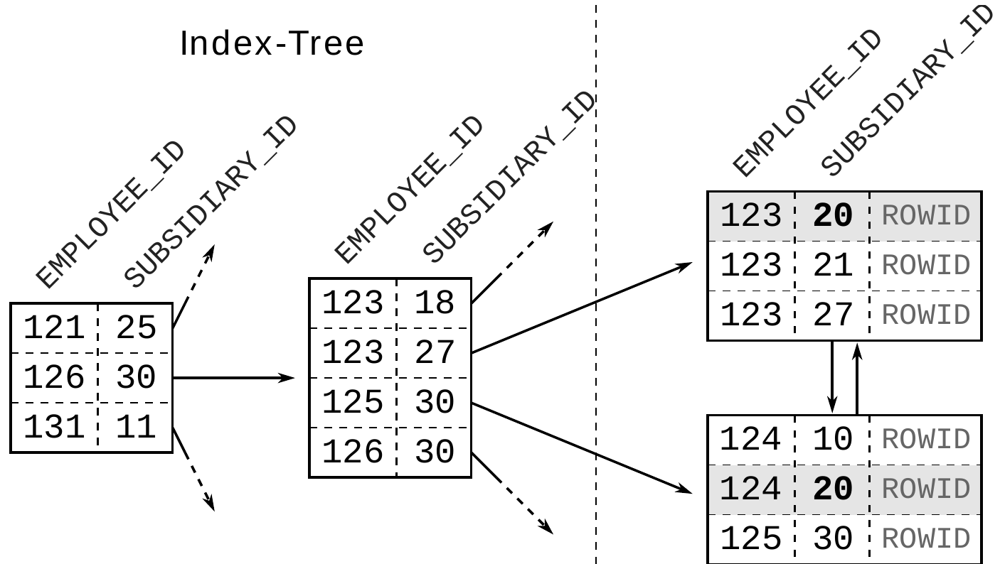
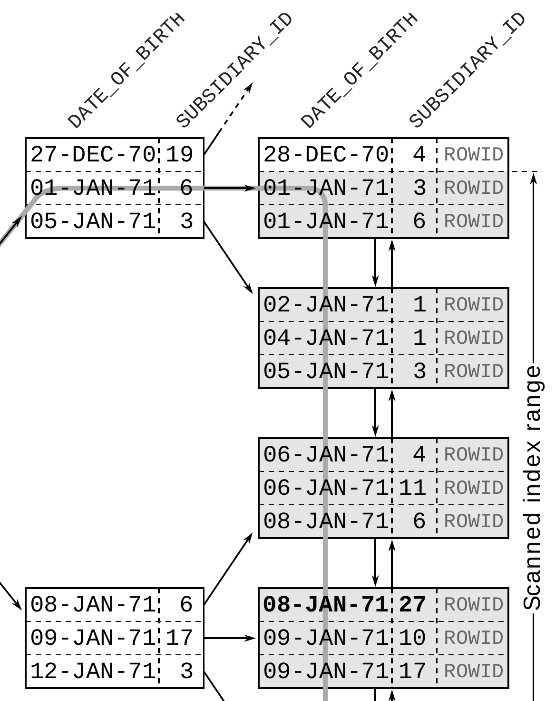
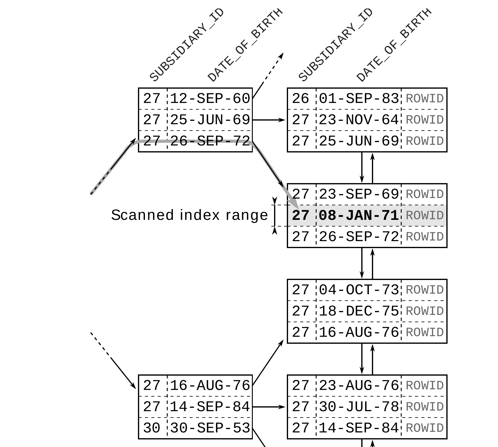
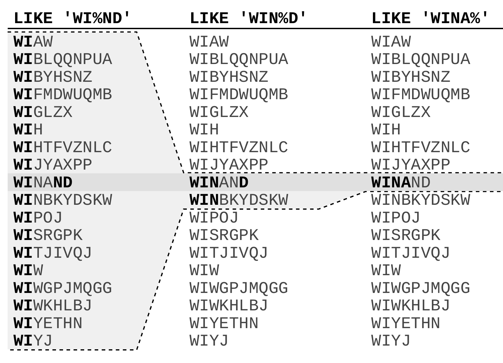

Chương 2
Where Clause
Chương trước đã mô tả cấu trúc của index và giải thích nguyên nhân khiến index có performance kém. Tiếp theo, chúng ta sẽ học cách nhận ra và tránh những vấn đề này trong SQL statement, bắt đầu với where clause.
Where clause xác định điều kiện tìm kiếm của một SQL statement, nên nó nằm đúng trong chức năng cốt lõi của index: tìm dữ liệu thật nhanh. Dù where clause ảnh hưởng rất lớn đến performance, nó lại thường được viết cẩu thả, khiến database phải scan một phần lớn của index. Hệ quả là: một where clause viết kém chính là yếu tố đầu tiên tạo nên một query chậm.
Chương này giải thích từng operator ảnh hưởng thế nào đến việc dùng index, và làm sao để một index dùng được cho càng nhiều query càng tốt. Phần cuối chương trình bày các anti-pattern thường gặp cùng những cách viết thay thế cho performance tốt hơn.
Equality Operator#
Equality operator vừa là SQL operator đơn giản nhất, vừa là operator được dùng thường xuyên nhất. Dù vậy, các lỗi indexing ảnh hưởng đến performance vẫn rất phổ biến, và những where clause kết hợp nhiều điều kiện là chỗ đặc biệt dễ mắc lỗi.
Phần này chỉ ra cách kiểm tra xem index có được dùng hay không, đồng thời giải thích cách concatenated index có thể tối ưu các điều kiện kết hợp. Để dễ hiểu hơn, chúng ta sẽ phân tích một query chậm để thấy những nguyên nhân đã giải thích ở Chương 1 tác động ra sao trong thực tế.
Primary Key#
Chúng ta bắt đầu với where clause đơn giản nhất nhưng cũng phổ biến nhất: primary key lookup. Các ví dụ trong suốt chương này đều dùng table EMPLOYEES, được định nghĩa như sau:
CREATE TABLE employees (
employee_id NUMBER NOT NULL,
first_name VARCHAR2(1000) NOT NULL,
last_name VARCHAR2(1000) NOT NULL,
date_of_birth DATE NOT NULL,
phone_number VARCHAR2(1000) NOT NULL,
CONSTRAINT employees_pk PRIMARY KEY (employee_id)
);Database tự động tạo index cho primary key. Vì vậy, column EMPLOYEE_ID đã có index, dù không hề có create index statement nào.
Query sau dùng primary key để lấy tên của một nhân viên:
SELECT first_name, last_name
FROM employees
WHERE employee_id = 123Where clause này không thể khớp với nhiều row, vì primary key constraint bảo đảm các giá trị EMPLOYEE_ID là duy nhất. Database không cần đi theo các index leaf node — chỉ cần duyệt index tree là đủ. Chúng ta có thể kiểm chứng điều này bằng cái gọi là execution plan:
---------------------------------------------------------------
|Id |Operation | Name | Rows | Cost |
---------------------------------------------------------------
| 0 |SELECT STATEMENT | | 1 | 2 |
| 1 | TABLE ACCESS BY INDEX ROWID| EMPLOYEES | 1 | 2 |
|*2 | INDEX UNIQUE SCAN | EMPLOYEES_PK | 1 | 1 |
---------------------------------------------------------------
Predicate Information (identified by operation id):
---------------------------------------------------
2 - access("EMPLOYEE_ID"=123)Execution plan của Oracle cho thấy INDEX UNIQUE SCAN - operation chỉ duyệt index tree. Operation này tận dụng đầy đủ logarithmic scalability của index để tìm entry rất nhanh, gần như không phụ thuộc vào kích thước table.
Sau khi truy cập index, database còn phải làm thêm một bước để lấy dữ liệu cần query (FIRST_NAME, LAST_NAME) từ table storage: đó là operation TABLE ACCESS BY INDEX ROWID. Như đã giải thích trong “Slow Indexes, Part I”, operation này có thể trở thành bottleneck về performance, nhưng rủi ro đó không tồn tại khi dùng INDEX UNIQUE SCAN. Operation này không thể trả về quá một entry, nên cũng không thể kích hoạt quá một lần table access. Nói cách khác, các yếu tố tạo nên một query chậm không hề có mặt trong một INDEX UNIQUE SCAN.
Primary Key Không Có Unique Index#
Primary key không nhất thiết phải có unique index — bạn cũng có thể dùng non-unique index. Khi đó, Oracle database không dùng INDEX UNIQUE SCAN mà dùng operation INDEX RANGE SCAN. Dù vậy, constraint vẫn bảo đảm các key là duy nhất, nên index lookup trả về tối đa một entry.
Một trong những lý do dùng non-unique index cho primary key là deferrable constraint. Regular constraint được validate ngay trong lúc thực thi statement; ngược lại, với deferrable constraint, database hoãn việc validate cho đến khi transaction được commit. Cần đến deferred constraint khi chèn dữ liệu vào các table có circular dependency.
Concatenated Index#
Dù database tự động tạo index cho primary key, vẫn có chỗ để tinh chỉnh thủ công nếu key gồm nhiều column. Khi đó, database tạo một index trên tất cả các primary key column — gọi là concatenated index (còn gọi là multicolumn, composite hoặc combined index). Lưu ý rằng thứ tự column trong concatenated index ảnh hưởng rất lớn đến khả năng dùng được của index, nên phải chọn thứ tự này thật cẩn thận.
Để minh họa, giả sử có một vụ sáp nhập công ty. Nhân viên của công ty kia được thêm vào table EMPLOYEES của chúng ta, khiến table lớn gấp mười lần. Chỉ có một vấn đề: EMPLOYEE_ID không còn là duy nhất khi gộp cả hai công ty. Chúng ta cần mở rộng primary key bằng một identifier bổ sung, chẳng hạn subsidiary ID. Vì vậy, primary key mới có hai column: EMPLOYEE_ID như trước, và SUBSIDIARY_ID để khôi phục tính duy nhất.
Vì vậy, index cho primary key mới được định nghĩa như sau:
CREATE UNIQUE INDEX employee_pk
ON employees (employee_id, subsidiary_id);Query tìm một nhân viên cụ thể phải tính đến toàn bộ primary key, tức là cũng phải dùng cả column SUBSIDIARY_ID:
SELECT first_name, last_name
FROM employees
WHERE employee_id = 123
AND subsidiary_id = 30;---------------------------------------------------------------
|Id |Operation | Name | Rows | Cost |
---------------------------------------------------------------
| 0 |SELECT STATEMENT | | 1 | 2 |
| 1 | TABLE ACCESS BY INDEX ROWID| EMPLOYEES | 1 | 2 |
|*2 | INDEX UNIQUE SCAN | EMPLOYEES_PK | 1 | 1 |
---------------------------------------------------------------
Predicate Information (identified by operation id):
---------------------------------------------------
2 - access("EMPLOYEE_ID"=123 AND "SUBSIDIARY_ID"=30)Bất cứ khi nào query dùng toàn bộ primary key, database có thể dùng INDEX UNIQUE SCAN, bất kể index có bao nhiêu column. Nhưng điều gì xảy ra khi chỉ dùng một trong các key column, chẳng hạn khi tìm tất cả nhân viên của một subsidiary?
SELECT first_name, last_name
FROM employees
WHERE subsidiary_id = 20;----------------------------------------------------
| Id | Operation | Name | Rows | Cost |
----------------------------------------------------
| 0 | SELECT STATEMENT | | 106 | 478 |
|* 1 | TABLE ACCESS FULL| EMPLOYEES | 106 | 478 |
----------------------------------------------------
Predicate Information (identified by operation id):
---------------------------------------------------
1 - filter("SUBSIDIARY_ID"=20)Execution plan cho thấy database không dùng index. Thay vào đó, database thực hiện FULL TABLE SCAN. Kết quả là database đọc toàn bộ table và đánh giá từng row theo where clause. Execution time tăng theo kích thước table: nếu table lớn gấp mười lần, FULL TABLE SCAN cũng mất thời gian gấp mười lần. Điều nguy hiểm của operation này là nó thường đủ nhanh trong một development environment nhỏ, nhưng lại gây ra vấn đề performance nghiêm trọng trên production.
Full Table Scan#
Operation TABLE ACCESS FULL, còn gọi là full table scan, vẫn có thể là operation hiệu quả nhất trong một số trường hợp, đặc biệt khi lấy một phần lớn table.
Một phần là do overhead của bản thân index lookup — thứ không hề có ở operation TABLE ACCESS FULL. Nhưng lý do chính là index lookup đọc lần lượt từng block một, vì database không biết cần đọc block nào tiếp theo cho đến khi xử lý xong block hiện tại. Còn FULL TABLE SCAN đằng nào cũng phải đọc toàn bộ table, nên database có thể đọc từng chunk lớn hơn mỗi lần (multi block read). Dù đọc nhiều dữ liệu hơn, database có thể chỉ cần thực hiện ít read operation hơn.
Database không dùng index vì không thể tùy ý dùng từng column riêng lẻ từ một concatenated index. Quan sát kỹ cấu trúc index sẽ làm rõ điều này.
Concatenated index cũng chỉ là B-tree index như mọi index khác, lưu dữ liệu đã index trong một list được sắp xếp. Database xét từng column theo vị trí của nó trong định nghĩa index để sắp xếp các index entry. Column đầu tiên là sort criterion chính, còn column thứ hai chỉ quyết định thứ tự nếu hai entry có cùng giá trị ở column đầu tiên, và cứ như vậy.
Vì thế, thứ tự của một index hai column cũng giống thứ tự của danh bạ điện thoại: sắp xếp theo họ trước, rồi mới đến tên. Nói cách khác, index hai column không hỗ trợ tìm kiếm chỉ theo column thứ hai; làm vậy chẳng khác gì tra danh bạ điện thoại theo tên.

Đoạn trích index trong Hình 2.1 cho thấy các entry của subsidiary 20 không được lưu cạnh nhau. Cũng dễ thấy rằng trong tree không có entry nào có SUBSIDIARY_ID = 20, dù các entry đó có tồn tại ở leaf node. Vì vậy, tree hoàn toàn vô dụng với query này.
SELECT <INDEX COLUMN LIST>
FROM <TABLE>
ORDER BY <INDEX COLUMN LIST>
FETCH FIRST 100 ROWS ONLY;Dĩ nhiên, chúng ta có thể thêm một index khác trên SUBSIDIARY_ID để cải thiện tốc độ query. Tuy nhiên, có một giải pháp tốt hơn — ít nhất là khi chúng ta giả định rằng việc tìm kiếm chỉ theo EMPLOYEE_ID là không có ý nghĩa.
Chúng ta có thể tận dụng một điều: column đầu tiên của index luôn dùng được để tìm kiếm. Lại giống như danh bạ điện thoại: bạn không cần biết tên vẫn tra được theo họ. Mẹo ở đây là đảo thứ tự column trong index để SUBSIDIARY_ID đứng ở vị trí đầu tiên:
CREATE UNIQUE INDEX EMPLOYEES_PK
ON EMPLOYEES (SUBSIDIARY_ID, EMPLOYEE_ID);Kết hợp lại, hai column này vẫn là duy nhất, nên query dùng toàn bộ primary key vẫn có thể dùng INDEX UNIQUE SCAN; nhưng thứ tự các index entry giờ đã hoàn toàn khác. SUBSIDIARY_ID đã trở thành sort criterion chính. Như vậy, mọi entry của cùng một subsidiary nằm liên tiếp nhau trong index, nên database có thể dùng B-tree để tìm ra vị trí của chúng.
--------------------------------------------------------------
|Id |Operation | Name | Rows | Cost |
--------------------------------------------------------------
| 0 |SELECT STATEMENT | | 106 | 75 |
| 1 | TABLE ACCESS BY INDEX ROWID| EMPLOYEES | 106 | 75 |
|*2 | INDEX RANGE SCAN | EMPLOYEE_PK | 106 | 2 |
--------------------------------------------------------------
Predicate Information (identified by operation id):
---------------------------------------------------
2 - access("SUBSIDIARY_ID"=20)Nói chung, database có thể dùng concatenated index khi tìm theo các column dẫn đầu (bên trái nhất). Một index ba column có thể dùng được khi tìm theo column đầu tiên, khi tìm theo cả hai column đầu tiên cùng lúc, và khi tìm theo tất cả các column.
Dù giải pháp dùng hai index cũng cho select performance rất tốt, giải pháp chỉ dùng một index vẫn đáng chọn hơn. Cách này không chỉ tiết kiệm storage space mà còn tiết kiệm luôn maintenance overhead của index thứ hai. Table càng ít index thì performance của insert, delete và update càng tốt.
Để định nghĩa một index tối ưu, chỉ hiểu cách index hoạt động là chưa đủ — bạn còn phải biết application query dữ liệu như thế nào. Tức là bạn phải biết những tổ hợp column nào xuất hiện trong where clause.
Vì vậy, việc định nghĩa một index tối ưu rất khó với external consultant, vì họ không có cái nhìn tổng thể về các access path của application. Consultant thường chỉ xét được một query. Họ không tận dụng được lợi ích bổ sung mà index có thể mang lại cho các query khác. Database administrator cũng ở tình thế tương tự: họ có thể biết database schema, nhưng không hiểu sâu về các access path.
Bộ phận development là nơi duy nhất mà kiến thức kỹ thuật về database gặp được kiến thức nghiệp vụ về business domain. Developer hiểu dữ liệu và biết rõ access path. Họ có thể đánh index đúng cách để mang lại lợi ích tốt nhất cho toàn bộ application mà không tốn nhiều công sức.
Index Chậm, Phần II#
Phần trước đã giải thích cách thu được lợi ích bổ sung từ index hiện có bằng cách thay đổi thứ tự column, nhưng ví dụ chỉ xét hai SQL statement. Tuy nhiên, thay đổi index có thể ảnh hưởng đến mọi query trên table được index. Phần này giải thích cách database chọn index và minh họa các side effect có thể xảy ra khi thay đổi index hiện có.
Index EMPLOYEE_PK sau khi được điều chỉnh giúp cải thiện performance của mọi query chỉ tìm theo subsidiary. Tuy nhiên, index này dùng được cho mọi query tìm theo SUBSIDIARY_ID — bất kể có thêm search criteria nào khác hay không. Nghĩa là index này giờ cũng dùng được cho những query trước đây vốn dùng một index khác, ứng với một phần khác của where clause. Khi đó, nếu có nhiều access path khả dụng, việc chọn ra access path tốt nhất là nhiệm vụ của optimizer.
Thay đổi index cũng có thể gây ra những side effect khó chịu. Trong ví dụ của chúng ta, application danh bạ điện thoại nội bộ đã trở nên rất chậm kể từ sau vụ sáp nhập. Lần phân tích đầu tiên xác định query sau là nguyên nhân gây chậm:
SELECT first_name, last_name, subsidiary_id, phone_number
FROM employees
WHERE last_name = 'WINAND'
AND subsidiary_id = 30;Execution plan là: Ví dụ 2.1. Execution Plan với Primary Key Index Đã Sửa Đổi
---------------------------------------------------------------
|Id |Operation | Name | Rows | Cost |
---------------------------------------------------------------
| 0 |SELECT STATEMENT | | 1 | 30 |
|*1 | TABLE ACCESS BY INDEX ROWID| EMPLOYEES | 1 | 30 |
|*2 | INDEX RANGE SCAN | EMPLOYEES_PK | 40 | 2 |
---------------------------------------------------------------
Predicate Information (identified by operation id):
---------------------------------------------------
1 - filter("LAST_NAME"='WINAND')
2 - access("SUBSIDIARY_ID"=30)Execution plan này dùng một index và có tổng cost value là 30. Đến đây thì mọi thứ vẫn ổn. Tuy nhiên, có một điểm đáng ngờ: plan lại dùng đúng index mà chúng ta vừa thay đổi. Chừng đó đã đủ lý do để nghi rằng việc thay đổi index gây ra vấn đề performance, nhất là khi nhớ lại định nghĩa index cũ: nó bắt đầu bằng column EMPLOYEE_ID, vốn hoàn toàn không nằm trong where clause. Trước đây, query này không thể dùng index đó.
Để phân tích sâu hơn, sẽ rất tiện nếu so sánh được execution plan trước và sau khi thay đổi. Để có lại execution plan ban đầu, chúng ta có thể triển khai lại định nghĩa index cũ, nhưng đa số database có cách đơn giản hơn để ngăn một query cụ thể dùng một index. Ví dụ sau dùng Oracle optimizer hint cho mục đích đó.
SELECT /*+ NO_INDEX(EMPLOYEES EMPLOYEE_PK) */
first_name, last_name, subsidiary_id, phone_number
FROM employees
WHERE last_name = 'WINAND'
AND subsidiary_id = 30;Còn execution plan nhiều khả năng đã được dùng trước khi thay đổi index thì hoàn toàn không dùng index nào:
----------------------------------------------------
| Id | Operation | Name | Rows | Cost |
----------------------------------------------------
| 0 | SELECT STATEMENT | | 1 | 477 |
|* 1 | TABLE ACCESS FULL| EMPLOYEES | 1 | 477 |
----------------------------------------------------
Predicate Information (identified by operation id):
---------------------------------------------------
1 - filter("LAST_NAME"='WINAND' AND "SUBSIDIARY_ID"=30)Dù TABLE ACCESS FULL phải đọc và xử lý toàn bộ table, trong trường hợp này nó lại có vẻ nhanh hơn dùng index. Điều này đặc biệt bất thường, vì query chỉ khớp với đúng một row. Dùng index để tìm một row lẽ ra phải nhanh hơn nhiều so với full table scan, nhưng ở đây thì không. Có vẻ index đang chậm.
Trong những trường hợp như vậy, tốt nhất là đi qua lần lượt từng bước của execution plan đang có vấn đề. Bước đầu tiên là INDEX RANGE SCAN trên index EMPLOYEES_PK. Index này không cover column LAST_NAME — INDEX RANGE SCAN chỉ có thể xét filter SUBSIDIARY_ID. Oracle database thể hiện điều này trong phần “Predicate Information”, ở entry “2” của execution plan. Tại đó, bạn có thể thấy các điều kiện được áp dụng cho từng operation.
INDEX RANGE SCAN với operation ID 2 (Ví dụ 2.1 ở trang 19) chỉ áp dụng filter SUBSIDIARY_ID=30. Tức là operation này duyệt index tree để tìm entry đầu tiên có SUBSIDIARY_ID 30, rồi đi theo leaf node chain để tìm tất cả các entry khác của subsidiary đó. Kết quả của INDEX RANGE SCAN là một list các ROWID thỏa điều kiện SUBSIDIARY_ID: tùy quy mô của subsidiary, có thể chỉ có vài ROWID, nhưng cũng có thể lên tới hàng trăm.
Bước tiếp theo là operation TABLE ACCESS BY INDEX ROWID. Operation này dùng các ROWID từ bước trước để lấy các row — gồm mọi column — từ table. Chỉ khi đã có column LAST_NAME, database mới đánh giá được phần còn lại của where clause. Nói cách khác, database phải lấy tất cả các row có SUBSIDIARY_ID=30 rồi mới áp dụng được filter LAST_NAME.
Response time của statement này không phụ thuộc vào kích thước result set, mà phụ thuộc vào số nhân viên trong subsidiary đang xét. Nếu subsidiary chỉ có vài nhân viên, INDEX RANGE SCAN cho performance tốt hơn. Tuy vậy, với một subsidiary rất lớn, TABLE ACCESS FULL có thể nhanh hơn, vì nó có thể đọc những phần lớn của table trong một lần (xem “Full Table Scan” ở trang 13).
Query chậm vì index lookup trả về rất nhiều ROWID, mỗi nhân viên của công ty ban đầu ứng với một giá trị, và database phải lấy riêng lẻ từng row tương ứng. Đây chính là sự kết hợp hoàn hảo của hai yếu tố khiến index chậm: database đọc một index range rộng và phải lấy riêng lẻ rất nhiều row.
Việc chọn execution plan tốt nhất còn phụ thuộc vào data distribution của table, nên optimizer dùng statistics về nội dung của database. Trong ví dụ của chúng ta, thông tin được dùng là một histogram thể hiện cách nhân viên phân bố theo từng subsidiary. Nhờ histogram này, optimizer có thể ước lượng số row mà index lookup trả về — kết quả đó được dùng để tính cost.
Nếu không có sẵn statistics — chẳng hạn vì statistics đã bị xóa — optimizer sẽ dùng các giá trị mặc định. Statistics mặc định của Oracle database mô tả một index nhỏ với selectivity trung bình. Từ các giá trị này, optimizer ước lượng rằng INDEX RANGE SCAN sẽ trả về 40 row. Execution plan hiển thị con số ước lượng đó trong column Rows (một lần nữa, xem Ví dụ 2.1 ở trang 19). Rõ ràng đây là một ước lượng thấp hơn thực tế rất nhiều, vì có tới 1000 nhân viên làm việc cho subsidiary này.
Nếu chúng ta cung cấp statistics chính xác, optimizer sẽ làm tốt hơn. Execution plan sau cho thấy ước lượng mới: 1000 row cho INDEX RANGE SCAN. Do đó, optimizer tính ra cost value cao hơn cho bước table access tiếp theo.
---------------------------------------------------------------
|Id |Operation | Name | Rows | Cost |
---------------------------------------------------------------
| 0 |SELECT STATEMENT | | 1 | 680 |
|*1 | TABLE ACCESS BY INDEX ROWID| EMPLOYEES | 1 | 680 |
|*2 | INDEX RANGE SCAN | EMPLOYEES_PK | 1000 | 4 |
---------------------------------------------------------------
Predicate Information (identified by operation id):
---------------------------------------------------
1 - filter("LAST_NAME"='WINAND')
2 - access("SUBSIDIARY_ID"=30)Cost value 680 thậm chí cao hơn cost value của execution plan dùng FULL TABLE SCAN (477, xem trang 20). Vì vậy optimizer sẽ tự động ưu tiên FULL TABLE SCAN.
Đừng để ví dụ về index chậm này che mất một sự thật: đánh index đúng cách vẫn là giải pháp tốt nhất. Dĩ nhiên, cách hỗ trợ tốt nhất cho việc tìm theo last name là một index trên LAST_NAME:
CREATE INDEX emp_name ON employees (last_name);Với index mới, optimizer tính cost value là 3:
Ví dụ 2.2. Execution Plan với Index Chuyên Dụng
--------------------------------------------------------------
| Id | Operation | Name | Rows | Cost |
--------------------------------------------------------------
| 0 | SELECT STATEMENT | | 1 | 3 |
|* 1 | TABLE ACCESS BY INDEX ROWID| EMPLOYEES | 1 | 3 |
|* 2 | INDEX RANGE SCAN | EMP_NAME | 1 | 1 |
--------------------------------------------------------------
Predicate Information (identified by operation id):
---------------------------------------------------
1 - filter("SUBSIDIARY_ID"=30)
2 - access("LAST_NAME"='WINAND')Theo ước lượng của optimizer, index access chỉ trả về một row. Vì thế, database chỉ phải lấy đúng row đó từ table — chắc chắn nhanh hơn FULL TABLE SCAN. Một index được định nghĩa đúng vẫn tốt hơn full table scan ban đầu.
Hai execution plan trong Ví dụ 2.1 (trang 19) và Ví dụ 2.2 gần như giống hệt nhau. Database thực hiện cùng các operation và optimizer tính ra các cost value tương tự nhau, vậy mà plan thứ hai lại chạy tốt hơn nhiều. Hiệu quả của một INDEX RANGE SCAN có thể dao động rất lớn, nhất là khi theo sau nó là một bước table access. Dùng index không tự động có nghĩa là statement được thực thi theo cách tốt nhất có thể.
Functions#
Index trên LAST_NAME đã cải thiện performance đáng kể, nhưng index này buộc bạn phải tìm kiếm với đúng kiểu chữ hoa/chữ thường như dữ liệu được lưu trong database. Phần này giải thích cách gỡ bỏ hạn chế đó mà không làm giảm performance.
Tìm Kiếm Không Phân Biệt Hoa Thường Bằng UPPER hoặc LOWER#
Bỏ qua chữ hoa/chữ thường trong where clause rất đơn giản. Chẳng hạn, bạn có thể chuyển cả hai vế của phép so sánh thành chữ in hoa toàn bộ:
SELECT first_name, last_name, phone_number
FROM employees
WHERE UPPER(last_name) = UPPER('winand');Dù search term hoặc column LAST_NAME dùng kiểu viết hoa nào, function UPPER vẫn làm chúng khớp như mong muốn.
----------------------------------------------------
| Id | Operation | Name | Rows | Cost |
----------------------------------------------------
| 0 | SELECT STATEMENT | | 10 | 477 |
|* 1 | TABLE ACCESS FULL| EMPLOYEES | 10 | 477 |
----------------------------------------------------
Predicate Information (identified by operation id):
---------------------------------------------------
1 - filter(UPPER("LAST_NAME")='WINAND')Logic của query này hoàn toàn hợp lý nhưng execution plan thì không.
Chúng ta lại gặp người bạn cũ full table scan. Dù có index trên LAST_NAME, index đó không dùng được vì việc tìm kiếm không diễn ra trên LAST_NAME mà trên UPPER(LAST_NAME). Theo góc nhìn của database, đây là hai thứ hoàn toàn khác nhau.
Đây là cái bẫy mà tất cả chúng ta có thể gặp phải. Chúng ta nhận ra ngay quan hệ giữa LAST_NAME và UPPER(LAST_NAME) và mong database cũng “thấy” như vậy. Trên thực tế, góc nhìn của optimizer giống thế này hơn:
SELECT first_name, last_name, phone_number
FROM employees
WHERE BLACKBOX(...) = 'WINAND';Function UPPER chỉ là một black box. Các parameter của function không liên quan vì không có quan hệ tổng quát nào giữa parameter của function và kết quả.
Để hỗ trợ query đó, chúng ta cần một index cover search term thực tế. Điều đó nghĩa là không cần index trên LAST_NAME mà trên UPPER(LAST_NAME):
CREATE INDEX emp_up_name
ON employees (UPPER(last_name));Index có định nghĩa chứa function hoặc expression được gọi là function-based index (FBI). Thay vì sao chép trực tiếp dữ liệu column vào index, function-based index áp dụng function trước rồi đưa kết quả vào index. Do đó index lưu tên ở dạng toàn chữ hoa.
Database có thể dùng function-based index nếu expression chính xác của định nghĩa index xuất hiện trong SQL statement, như ví dụ trên. Execution plan xác nhận điều này:
--------------------------------------------------------------
|Id |Operation | Name | Rows | Cost |
--------------------------------------------------------------
| 0 |SELECT STATEMENT | | 100 | 41 |
| 1 | TABLE ACCESS BY INDEX ROWID| EMPLOYEES | 100 | 41 |
|*2 | INDEX RANGE SCAN | EMP_UP_NAME | 40 | 1 |
--------------------------------------------------------------
Predicate Information (identified by operation id):
---------------------------------------------------
2 - access(UPPER("LAST_NAME")='WINAND')Đây là INDEX RANGE SCAN thông thường như đã mô tả ở Chương 1. Database duyệt B-tree và đi theo leaf node chain. Không có operation hoặc keyword riêng cho function-based index.
Execution plan vẫn chưa giống execution plan ở phần trước không dùng UPPER; estimate số row quá cao. Đặc biệt lạ là optimizer dự kiến lấy nhiều row từ table hơn số row mà INDEX RANGE SCAN trả về ngay từ đầu. Làm sao nó có thể lấy 100 row từ table nếu index scan trước đó chỉ trả về 40 row? Câu trả lời là không thể. Những estimate mâu thuẫn như vậy thường chỉ ra vấn đề với statistics. Trong trường hợp này, nguyên nhân là Oracle database không cập nhật table statistics khi tạo index mới (xem thêm “Oracle Statistics for Function-Based Indexes” ở trang 28).
Sau khi cập nhật statistics, optimizer tính các estimate chính xác hơn:
--------------------------------------------------------------
|Id |Operation | Name | Rows | Cost |
--------------------------------------------------------------
| 0 |SELECT STATEMENT | | 1 | 3 |
| 1 | TABLE ACCESS BY INDEX ROWID| EMPLOYEES | 1 | 3 |
|*2 | INDEX RANGE SCAN | EMP_UP_NAME | 1 | 1 |
--------------------------------------------------------------
Predicate Information (identified by operation id):
---------------------------------------------------
2 - access(UPPER("LAST_NAME")='WINAND')ALTER TABLE employees ADD last_name_up AS UPPER(last_name);
CREATE INDEX emp_up_name ON employees (last_name_up);SQL Server có thể dùng index này bất cứ khi nào expression đã index xuất hiện trong statement. Bạn không cần viết lại query để dùng computed column.
Sau khi tạo function-based index, hãy thu thập statistics
trên cả index và base table bằng package
DBMS_STATS.Statistics như vậy sẽ giúp Oracle Database
quyết định chính xác khi nào nên dùng index.
- Oracle Database SQL Language Reference
Khuyến nghị cá nhân của tôi còn đi xa hơn: sau mỗi thay đổi index, hãy cập nhật statistics cho base table và mọi index của nó. Tuy vậy, điều đó cũng có thể dẫn đến side effect không mong muốn. Hãy phối hợp việc này với database administrator (DBA) và backup statistics gốc.
User-Defined Function#
Function-based indexing là cách tiếp cận rất tổng quát. Ngoài function như UPPER, bạn còn có thể index expression như A + B và thậm chí dùng user-defined function trong định nghĩa index.
Có một ngoại lệ quan trọng. Chẳng hạn, không thể tham chiếu current time trong định nghĩa index, trực tiếp hay gián tiếp, như ví dụ sau.
CREATE FUNCTION get_age(date_of_birth DATE)
RETURN NUMBER
AS
BEGIN
RETURN
TRUNC(MONTHS_BETWEEN(SYSDATE, date_of_birth)/12);
END;
/Function GET_AGE dùng ngày hiện tại (SYSDATE) để tính tuổi dựa trên ngày sinh được cung cấp. Bạn có thể dùng function này ở mọi phần của SQL query, ví dụ trong select và where clause:
SELECT first_name, last_name, get_age(date_of_birth)
FROM employees
WHERE get_age(date_of_birth) = 42;Query liệt kê mọi nhân viên 42 tuổi. Dùng function-based index là ý tưởng hiển nhiên để tối ưu query này, nhưng bạn không thể dùng function GET_AGE trong định nghĩa index vì nó không deterministic. Điều đó nghĩa là kết quả của function call không hoàn toàn được quyết định bởi parameter của nó. Chỉ function luôn trả về cùng kết quả cho cùng parameter, tức function deterministic, mới có thể được index.
Lý do cho hạn chế này đơn giản. Khi insert row mới, database gọi function và lưu kết quả trong index, rồi kết quả đó nằm yên, không đổi. Không có process định kỳ nào cập nhật index. Database chỉ cập nhật tuổi đã index khi ngày sinh bị thay đổi bằng update statement. Sau sinh nhật tiếp theo, tuổi được lưu trong index sẽ sai.
Ngoài việc phải deterministic, PostgreSQL và Oracle database yêu cầu function được khai báo deterministic khi dùng trong index, nên bạn phải dùng keyword DETERMINISTIC (Oracle) hoặc IMMUTABLE (PostgreSQL).
Các ví dụ khác về function không thể được “index” là random number generator và function phụ thuộc environment variable.
Over-Indexing#
Nếu khái niệm function-based indexing còn mới, bạn có thể bị cám dỗ index mọi thứ, nhưng thực tế đây là điều cuối cùng bạn nên làm. Lý do là mọi index đều tạo ra maintenance liên tục. Function-based index đặc biệt rắc rối vì chúng khiến việc tạo index dư thừa rất dễ dàng.
Tìm kiếm không phân biệt hoa thường ở trên cũng có thể triển khai bằng function LOWER:
SELECT first_name, last_name, phone_number
FROM employees
WHERE LOWER(last_name) = LOWER('winand');Một index không thể hỗ trợ cả hai cách bỏ qua chữ hoa thường. Dĩ nhiên, chúng ta có thể tạo index thứ hai trên LOWER(last_name) cho query này, nhưng điều đó nghĩa là database phải duy trì hai index cho mỗi statement insert, update và delete (xem thêm Chương 8, “Modifying Data”). Để một index là đủ, bạn nên dùng nhất quán cùng một function trong toàn application.
Parameterized Queries#
Phần này bàn về một chủ đề mà phần lớn textbook về SQL bỏ qua: parameterized query và bind parameter.
Bind parameter, còn gọi là dynamic parameter hoặc bind variable, là một cách khác để truyền dữ liệu vào database. Thay vì đặt giá trị trực tiếp vào SQL statement, bạn chỉ cần dùng một placeholder như ?, :name hoặc @name rồi cung cấp giá trị thực qua một API call riêng.
Viết giá trị trực tiếp vào các ad-hoc statement không có gì sai; tuy nhiên, có hai lý do chính đáng để dùng bind parameter trong chương trình:
Security#
Bind variable là cách tốt nhất để ngăn SQL injection.¹
Performance#
Những database có execution plan cache, như SQL Server và Oracle database, có thể tái sử dụng execution plan khi thực thi cùng một statement nhiều lần. Nhờ vậy, database đỡ tốn công xây dựng lại execution plan, nhưng cách này chỉ hoạt động khi SQL statement giống hệt nhau. Nếu bạn đặt các giá trị khác nhau vào SQL statement, database sẽ coi đó là một statement khác và tạo lại execution plan.
Khi dùng bind parameter, bạn không viết giá trị thực vào SQL statement mà chèn placeholder vào đó. Nhờ vậy, statement không thay đổi khi được thực thi với các giá trị khác nhau.
99 rows selected.
SELECT first_name, last_name
FROM employees
WHERE subsidiary_id = 20;---------------------------------------------------------------
|Id | Operation | Name | Rows | Cost |
---------------------------------------------------------------
| 0 | SELECT STATEMENT | | 99 | 70 |
| 1 | TABLE ACCESS BY INDEX ROWID| EMPLOYEES | 99 | 70 |
|*2 | INDEX RANGE SCAN | EMPLOYEE_PK | 99 | 2 |
---------------------------------------------------------------
Predicate Information (identified by operation id):
---------------------------------------------------
2 - access("SUBSIDIARY_ID"=20)Index lookup cho performance tốt nhất với các subsidiary nhỏ, nhưng TABLE ACCESS FULL có thể nhanh hơn index với các subsidiary lớn:
1000 rows selected.
SELECT first_name, last_name
FROM employees
WHERE subsidiary_id = 30;----------------------------------------------------
| Id | Operation | Name | Rows | Cost |
----------------------------------------------------
| 0 | SELECT STATEMENT | | 1000 | 478 |
|* 1 | TABLE ACCESS FULL| EMPLOYEES | 1000 | 478 |
----------------------------------------------------
Predicate Information (identified by operation id):
---------------------------------------------------
1 - filter("SUBSIDIARY_ID"=30)Trong trường hợp này, histogram trên SUBSIDIARY_ID phát huy đúng tác dụng. Optimizer dùng histogram này để xác định frequency của subsidiary ID được nêu trong SQL query. Vì vậy, optimizer có được hai row count estimate khác nhau cho hai query.
Do đó, bước tính cost tiếp theo sẽ cho ra hai cost value khác nhau. Đến lúc chọn execution plan, optimizer lấy plan có cost value thấp nhất. Với subsidiary nhỏ hơn, đó là plan dùng index.
Cost của operation TABLE ACCESS BY INDEX ROWID rất nhạy với row count estimate. Nếu số row được chọn tăng gấp mười lần, cost value cũng tăng theo đúng hệ số đó. Khi ấy, tổng cost của plan dùng index thậm chí còn cao hơn full table scan. Vì vậy, với subsidiary lớn hơn, optimizer sẽ chọn execution plan còn lại.
Khi dùng bind parameter, optimizer không có giá trị cụ thể nào để xác định frequency của chúng. Khi đó, optimizer chỉ giả định dữ liệu phân phối đồng đều và luôn nhận được cùng row count estimate và cost value. Cuối cùng, optimizer sẽ luôn chọn cùng một execution plan.
Nếu so optimizer với compiler, bind variable giống như program variable, còn giá trị viết thẳng vào statement thì giống constant hơn. Database có thể dùng các giá trị trong SQL statement trong lúc optimization, giống như compiler có thể tính sẵn các constant expression trong lúc compile. Nói đơn giản, optimizer không nhìn thấy bind parameter, cũng như compiler không biết runtime value của variable.
Từ góc nhìn này, có một điều hơi nghịch lý: không dùng bind parameter thì optimizer luôn chọn được execution plan tốt nhất, vậy mà bind parameter vẫn có thể cải thiện performance. Nhưng câu hỏi là: cái giá phải trả là bao nhiêu? Tạo và đánh giá mọi biến thể execution plan tốn rất nhiều công sức, và sẽ không đáng nếu cuối cùng bạn vẫn nhận được cùng một kết quả.
Chọn xây dựng specialized execution plan hay generic execution plan là một thế lưỡng nan đối với database. Một là database bỏ công đánh giá mọi plan variant có thể có ở mỗi lần thực thi, để luôn có execution plan tốt nhất. Hai là database tiết kiệm optimization overhead và dùng cached execution plan bất cứ khi nào có thể, chấp nhận rủi ro dùng một execution plan chưa tối ưu. Cái khó là nếu chưa thực sự chạy toàn bộ quá trình optimization, database không thể biết full optimization cycle có cho ra một execution plan khác hay không. Các database vendor cố giải quyết thế lưỡng nan này bằng các heuristic method, nhưng thành công rất hạn chế.
Là developer, bạn có thể chủ động dùng bind parameter để giúp gỡ thế lưỡng nan này. Nói cách khác, bạn nên luôn dùng bind parameter, trừ những giá trị cần được phép ảnh hưởng đến execution plan.
Các status code phân phối không đồng đều như “todo” và “done” là một ví dụ tốt. Số entry “done” thường nhiều hơn số record “todo” tới một order of magnitude. Trong trường hợp đó, dùng index chỉ có ý nghĩa khi tìm các entry “todo”. Partitioning là một ví dụ khác — tức là khi bạn chia table và index ra nhiều storage area. Khi đó, giá trị thực có thể ảnh hưởng đến việc partition nào phải được scan. Như chúng ta sẽ thấy ở phần tiếp theo, performance của LIKE query cũng có thể bị bind parameter làm giảm.
Các đoạn code sau minh họa cách dùng bind parameter trong nhiều programming language khác nhau.
C##
Without bind parameters:#
int subsidiary_id;
SqlCommand cmd = new SqlCommand(
"select first_name, last_name"
+ " from employees"
+ " where subsidiary_id = " + subsidiary_id
, connection);Using a bind parameter:#
int subsidiary_id;
SqlCommand cmd =
new SqlCommand(
"select first_name, last_name"
+ " from employees"
+ " where subsidiary_id = @subsidiary_id
, connection);
cmd.Parameters.AddWithValue("@subsidiary_id", subsidiary_id);Xem thêm: tài liệu class SqlParameterCollection.
Java#
Without bind parameters:#
int subsidiary_id;
Statement command = connection.createStatement(
"select first_name, last_name"
+ " from employees"
+ " where subsidiary_id = " + subsidiary_id
);Using a bind parameter:#
int subsidiary_id;
PreparedStatement command = connection.prepareStatement(
"select first_name, last_name"
+ " from employees"
+ " where subsidiary_id = ?"
);
command.setInt(1, subsidiary_id);Xem thêm: tài liệu class PreparedStatement.
Perl#
Without bind parameters:#
my $subsidiary_id;
my $sth = $dbh->prepare(
"select first_name, last_name"
. " from employees"
. " where subsidiary_id = $subsidiary_id"
);
$sth->execute();Using a bind parameter:#
my $subsidiary_id;
my $sth = $dbh->prepare(
"select first_name, last_name"
. " from employees"
. " where subsidiary_id = ?"
);
$sth->execute($subsidiary_id);Xem: Programming the Perl DBI.
PHP#
Using MySQL, without bind parameters:#
$mysqli->query("select first_name, last_name"
. " from employees"
. " where subsidiary_id = " . $subsidiary_id);Using a bind parameter:#
if ($stmt = $mysqli->prepare("select first_name, last_name"
. " from employees"
. " where subsidiary_id = ?"))
{
$stmt->bind_param("i", $subsidiary_id);
$stmt->execute();
} else {
/* handle SQL error */
}Xem thêm: tài liệu class mysqli_stmt::bind_param và “Prepared statements and stored procedures” trong tài liệu PDO.
Ruby#
Without bind parameters:#
dbh.execute("select first_name, last_name"
+ " from employees"
+ " where subsidiary_id = {subsidiary_id}");Using a bind parameter:#
dbh.prepare("select first_name, last_name"
+ " from employees"
+ " where subsidiary_id = ?");
dbh.execute(subsidiary_id);Xem thêm: “Quoting, Placeholders, and Parameter Binding” trong Ruby DBI Tutorial.
Dấu hỏi (?) là placeholder duy nhất được SQL standard định nghĩa. Dấu hỏi là positional parameter, nghĩa là các dấu hỏi được đánh số từ trái sang phải. Muốn bind một giá trị vào một dấu hỏi cụ thể, bạn phải chỉ định số thứ tự của nó. Tuy nhiên, cách này có thể rất bất tiện, vì số thứ tự sẽ thay đổi mỗi khi thêm hoặc xóa placeholder. Để giải quyết vấn đề này, nhiều database cung cấp extension riêng (proprietary) cho named parameter, chẳng hạn dùng ký hiệu “at” (@name) hoặc dấu hai chấm (:name).
String sql = prepare("SELECT * FROM ? WHERE ?");
sql.execute('employees', 'employee_id = 1');Nếu cần thay đổi cấu trúc của SQL statement lúc runtime, hãy dùng dynamic SQL.
Cursor Sharing and Auto Parameterization#
Optimizer và SQL query càng phức tạp thì việc cache execution plan càng quan trọng. SQL Server và Oracle database có các tính năng tự động thay literal value trong SQL string bằng bind parameter. Các tính năng này được gọi là CURSOR_SHARING (Oracle) và forced parameterization (SQL Server).
Cả hai tính năng đều là workaround cho những application hoàn toàn không dùng bind parameter. Khi bật các tính năng này, developer không thể cố ý dùng literal value được nữa.
Searching for Ranges#
Rủi ro performance lớn nhất của INDEX RANGE SCAN là leaf node traversal. Vì vậy, quy tắc vàng của indexing là giữ scanned index range nhỏ nhất có thể. Bạn có thể kiểm tra điều này bằng cách tự hỏi index scan bắt đầu và kết thúc ở đâu.
Các inequality operator như <, > và between có thể dùng index giống như equals operator đã giải thích ở trên. Ngay cả LIKE filter, trong một số trường hợp, cũng có thể dùng index giống như range condition.
Dùng các operation này sẽ thu hẹp lựa chọn về thứ tự column trong multicolumn index. Giới hạn này thậm chí có thể loại bỏ mọi phương án index tối ưu — có những query mà bạn đơn giản là không thể định nghĩa được một thứ tự column “đúng”.
Greater, Less and BETWEEN#
Câu hỏi này dễ trả lời nếu SQL statement nêu rõ start condition và stop condition:
SELECT first_name, last_name, date_of_birth
FROM employees
WHERE date_of_birth >= TO_DATE(?, 'YYYY-MM-DD')
AND date_of_birth <= TO_DATE(?, 'YYYY-MM-DD')Index trên DATE_OF_BIRTH chỉ được scan trong range đã chỉ định. Scan bắt đầu từ ngày thứ nhất và kết thúc ở ngày thứ hai. Chúng ta không thể thu hẹp scanned index range hơn được nữa.
Start condition và stop condition khó thấy hơn khi có thêm column thứ hai:
SELECT first_name, last_name, date_of_birth
FROM employees
WHERE date_of_birth >= TO_DATE(?, 'YYYY-MM-DD')
AND date_of_birth <= TO_DATE(?, 'YYYY-MM-DD')
AND subsidiary_id = ?Dĩ nhiên, index lý tưởng phải bao gồm cả hai column, nhưng câu hỏi là theo thứ tự nào?
Các hình sau cho thấy thứ tự column ảnh hưởng thế nào đến scanned index range. Trong minh họa này, chúng ta tìm tất cả nhân viên của subsidiary 27 sinh trong khoảng từ ngày 1 tháng 1 đến ngày 9 tháng 1 năm 1971.
Hình 2.2 minh họa một phần của index trên DATE_OF_BIRTH và SUBSIDIARY_ID, theo đúng thứ tự đó. Database sẽ bắt đầu đi theo leaf node chain từ đâu? Hay nói cách khác: tree traversal sẽ kết thúc ở đâu?
Index được sắp xếp theo birth date trước. Chỉ khi hai nhân viên sinh cùng ngày thì SUBSIDIARY_ID mới được dùng để sắp xếp các record đó. Tuy nhiên, query lại bao phủ cả một date range. Vì vậy, thứ tự của SUBSIDIARY_ID vô dụng trong tree traversal. Điều này sẽ thấy rõ khi bạn để ý rằng branch node không có entry nào cho subsidiary 27, dù leaf node thì có. Do đó, filter trên DATE_OF_BIRTH là điều kiện duy nhất giới hạn scanned index range. Range này bắt đầu từ entry đầu tiên khớp date range và kết thúc ở entry cuối cùng khớp date range, tức trải hết cả năm leaf node trong Hình 2.2.
DATE_OF_BIRTH, SUBSIDIARY_ID
Bức tranh hoàn toàn khác khi đảo thứ tự column. Hình 2.3 minh họa scan khi index bắt đầu bằng column SUBSIDIARY_ID.
Điểm khác biệt là equals operator giới hạn column đầu tiên của index vào một giá trị duy nhất. Trong range của giá trị này (SUBSIDIARY_ID 27), index được sắp xếp theo column thứ hai, tức date of birth. Vì vậy, database không cần đi qua leaf node đầu tiên: branch node đã cho biết leaf node đầu tiên không chứa employee nào của subsidiary 27 sinh sau ngày 25 tháng 6 năm 1969.
SUBSIDIARY_ID, DATE_OF_BIRTH
Tree traversal dẫn trực tiếp đến leaf node thứ hai. Trong trường hợp này, mọi điều kiện của where clause đều giới hạn scanned index range, nên scan kết thúc ngay tại leaf node đó.
Với ví dụ này, chúng ta cũng có thể bác bỏ myth rằng column có selectivity cao nhất phải nằm ở vị trí ngoài cùng bên trái của index. Nếu nhìn vào các hình và chỉ xét selectivity của column đầu tiên, ta thấy cả hai điều kiện đều khớp 13 record. Điều này đúng bất kể ta chỉ filter theo DATE_OF_BIRTH hay chỉ filter theo SUBSIDIARY_ID. Selectivity không giúp được gì ở đây, nhưng một thứ tự column vẫn tốt hơn thứ tự còn lại.
Muốn tối ưu performance, điều rất quan trọng là phải biết scanned index range. Với phần lớn database, bạn thậm chí có thể thấy range này ngay trong execution plan, chỉ cần biết phải tìm gì. Execution plan sau của Oracle database cho thấy rõ ràng rằng index EMP_TEST bắt đầu bằng column DATE_OF_BIRTH.
--------------------------------------------------------------
|Id | Operation | Name | Rows | Cost |
--------------------------------------------------------------
| 0 | SELECT STATEMENT | | 1 | 4 |
|*1 | FILTER | | | |
| 2 | TABLE ACCESS BY INDEX ROWID| EMPLOYEES | 1 | 4 |
|*3 | INDEX RANGE SCAN | EMP_TEST | 2 | 2 |
--------------------------------------------------------------
Predicate Information (identified by operation id):
---------------------------------------------------
1 - filter(:END_DT >= :START_DT)
3 - access(DATE_OF_BIRTH >= :START_DT
AND DATE_OF_BIRTH <= :END_DT)
filter(SUBSIDIARY_ID = :SUBS_ID)Phần predicate information của INDEX RANGE SCAN cho ta manh mối then chốt: phần này cho biết mỗi điều kiện trong where clause là access predicate hay filter predicate. Đây là cách database cho chúng ta biết nó dùng từng điều kiện như thế nào.
Các điều kiện trên column DATE_OF_BIRTH là những điều kiện duy nhất được liệt kê dưới dạng access predicate; chúng giới hạn scanned index range. Vì vậy, DATE_OF_BIRTH là column đầu tiên trong index EMP_TEST. Column SUBSIDIARY_ID chỉ được dùng làm filter.
Database có thể dùng mọi điều kiện làm access predicate nếu chúng ta đảo định nghĩa index:
---------------------------------------------------------------
| Id | Operation | Name | Rows | Cost |
---------------------------------------------------------------
| 0 | SELECT STATEMENT | | 1 | 3 |
|* 1 | FILTER | | | |
| 2 | TABLE ACCESS BY INDEX ROWID| EMPLOYEES | 1 | 3 |
|* 3 | INDEX RANGE SCAN | EMP_TEST2 | 1 | 2 |
---------------------------------------------------------------
Predicate Information (identified by operation id):
---------------------------------------------------
1 - filter(:END_DT >= :START_DT)
3 - access(SUBSIDIARY_ID = :SUBS_ID
AND DATE_OF_BIRTH >= :START_DT
AND DATE_OF_BIRTH <= :END_T)Cuối cùng là between operator. Operator này cho phép bạn chỉ định cả upper bound lẫn lower bound trong một condition duy nhất:
DATE_OF_BIRTH BETWEEN '01-JAN-71'
AND '10-JAN-71'Lưu ý rằng between luôn bao gồm các giá trị được chỉ định, giống như khi dùng operator less than or equal to (<=) và greater than or equal to (>=):
DATE_OF_BIRTH >= '01-JAN-71'
AND DATE_OF_BIRTH <= '10-JAN-71'Indexing LIKE Filters#
SQL LIKE operator rất hay khiến performance diễn biến ngoài dự đoán, vì một số search term ngăn database dùng index hiệu quả. Nói cách khác, có những search term được index rất tốt, nhưng cũng có những search term thì không. Điều tạo nên toàn bộ khác biệt chính là vị trí của wildcard character.
Ví dụ sau dùng wildcard % ở giữa search term:
SELECT first_name, last_name, date_of_birth
FROM employees
WHERE UPPER(last_name) LIKE 'WIN%D'---------------------------------------------------------------
|Id | Operation | Name | Rows | Cost |
---------------------------------------------------------------
| 0 | SELECT STATEMENT | | 1 | 4 |
| 1 | TABLE ACCESS BY INDEX ROWID| EMPLOYEES | 1 | 4 |
|*2 | INDEX RANGE SCAN | EMP_UP_NAME | 1 | 2 |
---------------------------------------------------------------LIKE filter chỉ có thể dùng các character trước wildcard đầu tiên trong lúc tree traversal. Các character còn lại chỉ là filter predicate và không thu hẹp scanned index range. Vì vậy, một LIKE expression có thể chứa hai loại predicate: (1) phần trước wildcard đầu tiên là access predicate; (2) các character còn lại là filter predicate.
Prefix trước wildcard đầu tiên càng selective thì scanned index range càng nhỏ, và nhờ đó index lookup càng nhanh. Hình 2.4 minh họa quan hệ này bằng ba LIKE expression khác nhau. Cả ba đều chọn cùng một row, nhưng scanned index range — và do đó cả performance — lại rất khác nhau.
LIKE search khác nhau
Expression đầu tiên có hai character trước wildcard. Chúng giới hạn scanned index range còn 18 row. Chỉ một row trong số đó khớp toàn bộ LIKE expression, còn 17 row kia được fetch rồi loại bỏ. Expression thứ hai có prefix dài hơn, thu hẹp scanned index range còn hai row. Với expression này, database chỉ đọc thêm một row không liên quan đến kết quả. Expression cuối cùng hoàn toàn không có filter predicate: database chỉ đọc entry khớp toàn bộ LIKE expression.
Trường hợp ngược lại cũng có thể xảy ra: LIKE expression bắt đầu bằng wildcard. LIKE expression như vậy không thể làm access predicate. Database phải scan toàn bộ table nếu không có condition khác cung cấp access predicate.
Vị trí của wildcard character ảnh hưởng đến việc dùng index — ít nhất là trên lý thuyết. Trên thực tế, optimizer tạo generic execution plan khi search term được truyền qua bind parameter. Khi đó, optimizer phải đoán xem phần lớn các lần thực thi có leading wildcard hay không.
Phần lớn database chỉ đơn giản giả định rằng không có leading wildcard khi optimize một LIKE condition có bind parameter, nhưng giả định này sai nếu LIKE expression được dùng cho full-text search. Đáng tiếc là không có cách trực tiếp nào để đánh dấu một LIKE condition là full-text search. Box “Labeling Full-Text LIKE Expressions” trình bày một cách thử làm việc này, nhưng không hiệu quả. Cách dễ thấy nhất là truyền thẳng search term mà không qua bind parameter, nhưng cách này làm tăng optimization overhead và mở ra lỗ hổng SQL injection. Một giải pháp hiệu quả mà vẫn an toàn và portable là cố ý obfuscate LIKE condition. “Combining Columns” ở trang 70 giải thích chi tiết cách làm này.
WHERE text_column LIKE '%' || ? || '%'Wildcard được viết trực tiếp vào SQL statement, nhưng chúng ta dùng bind parameter cho search term. Database tự xây dựng LIKE expression cuối cùng bằng string concatenation operator || (Oracle, PostgreSQL). Dù dùng bind parameter, LIKE expression cuối cùng luôn bắt đầu bằng wildcard. Đáng tiếc là database không nhận ra điều đó.
Với PostgreSQL database, vấn đề lại khác: PostgreSQL giả định có leading wildcard khi dùng bind parameter cho LIKE expression. Trong trường hợp đó, PostgreSQL đơn giản là không dùng index. Cách duy nhất để có index access cho LIKE expression là để optimizer nhìn thấy search term thực tế.
Nếu không dùng bind parameter mà đặt search term trực tiếp vào SQL statement, bạn phải thực hiện các biện pháp phòng ngừa khác để chống SQL injection attack!
Ngay cả khi database optimize execution plan cho leading wildcard, performance vẫn có thể không đủ tốt. Trong trường hợp đó, bạn có thể dùng phần khác của where clause để truy cập dữ liệu hiệu quả, xem thêm “Index Filter Predicates Used Intentionally” ở trang 112. Nếu không có access path nào khác, bạn có thể dùng một trong các giải pháp full-text index proprietary sau.
MySQL#
MySQL cung cấp keyword match và against cho full-text search. Từ MySQL 5.6, bạn cũng có thể tạo full-text index cho table InnoDB; trước đó, việc này chỉ có thể thực hiện với table MyISAM. Xem “Full-Text Search Functions” trong tài liệu MySQL.
Oracle Database#
Oracle database cung cấp keyword contains. Xem “Oracle Text Application Developer’s Guide”.
PostgreSQL#
PostgreSQL cung cấp operator @@ để triển khai full-text search. Xem “Full Text Search” trong tài liệu PostgreSQL.
Một lựa chọn khác là dùng extension WildSpeed để optimize trực tiếp LIKE expression. Extension này lưu text theo mọi phép xoay (rotation) có thể, sao cho mỗi character đều có một lần nằm ở đầu. Nói cách khác, text được index không chỉ lưu một lần, mà lưu số lần bằng số character trong string, nên tốn rất nhiều dung lượng.
SQL Server#
SQL Server cung cấp keyword contains. Xem “Full-Text Search” trong tài liệu SQL Server.
Index Merge#
Một trong những câu hỏi phổ biến nhất về indexing là: nên tạo một index cho mỗi column hay một index duy nhất cho tất cả column trong where clause? Trong phần lớn trường hợp, câu trả lời rất đơn giản: một index có nhiều column tốt hơn.
Tuy nhiên, có những query mà một index duy nhất không thể xử lý hoàn hảo, bất kể bạn định nghĩa index thế nào; chẳng hạn query có từ hai range condition độc lập trở lên như ví dụ sau:
SELECT first_name, last_name, date_of_birth
FROM employees
WHERE UPPER(last_name) < ?
AND date_of_birth < ?Không thể định nghĩa một B-tree index nào hỗ trợ query này mà không cần đến filter predicate. Để hiểu vì sao, bạn chỉ cần nhớ rằng index là một linked list.
Nếu định nghĩa index là UPPER(LAST_NAME), DATE_OF_BIRTH theo thứ tự đó, list sẽ bắt đầu bằng A và kết thúc bằng Z. Date of birth chỉ được xét đến khi có hai employee trùng tên. Nếu định nghĩa index theo thứ tự ngược lại, list sẽ bắt đầu bằng những employee lớn tuổi nhất và kết thúc bằng những employee trẻ nhất. Khi đó, tên chỉ ảnh hưởng chút ít đến thứ tự sắp xếp.
Dù xoay chuyển định nghĩa index thế nào, các entry vẫn luôn được xếp dọc theo một chain. Một đầu là các entry nhỏ, đầu kia là các entry lớn. Vì vậy, index chỉ có thể hỗ trợ một range condition dưới dạng access predicate. Muốn hỗ trợ hai range condition độc lập thì cần thêm một trục thứ hai, chẳng hạn như một bàn cờ. Khi đó, query ở trên sẽ khớp tất cả entry tính từ một góc của bàn cờ. Nhưng index không giống bàn cờ mà giống một chain — và chain thì không có góc.
Dĩ nhiên, bạn vẫn có thể chấp nhận filter predicate và dùng multicolumn index. Trong nhiều trường hợp, đó vẫn là giải pháp tốt nhất. Khi đó, định nghĩa index nên đặt column selective hơn lên trước để column này có thể được dùng làm access predicate. Đây có thể là nguồn gốc của myth “most selective first”, nhưng quy tắc này chỉ đúng khi bạn không thể tránh filter predicate.
Lựa chọn còn lại là dùng hai index riêng, mỗi index cho một column. Khi đó, database trước tiên phải scan cả hai index rồi mới kết hợp kết quả. Riêng việc lookup hai lần trên index đã tốn công hơn, vì database phải duyệt hai index tree. Ngoài ra, database còn cần nhiều memory và CPU time để kết hợp các kết quả trung gian.
Database dùng hai phương pháp để kết hợp index. Thứ nhất là index join; Chương 4, “The Join Operation”, giải thích chi tiết các thuật toán liên quan. Cách thứ hai tận dụng một tính năng đến từ thế giới data warehouse.
Data warehouse là mẹ của mọi ad-hoc query. Chỉ cần vài cú click là có thể kết hợp các condition tùy ý thành query bạn muốn. Vì không thể dự đoán những tổ hợp column nào có thể xuất hiện trong where clause, cách indexing như đã giải thích từ đầu đến giờ gần như không thể áp dụng.
Data warehouse dùng một loại index chuyên dụng để giải quyết vấn đề đó: bitmap index. Ưu điểm của bitmap index là có thể kết hợp chúng với nhau khá dễ dàng. Nhờ đó, chỉ cần index riêng từng column là bạn đã có performance khá tốt. Ngược lại, nếu biết trước query để có thể tạo một multicolumn B-tree index thiết kế riêng cho nó, thì index đó vẫn nhanh hơn việc kết hợp nhiều bitmap index.
Điểm yếu lớn nhất của bitmap index, lớn hơn hẳn mọi điểm yếu khác, là scalability tệ đến mức nực cười với insert, update và delete. Concurrent write operation gần như không thể thực hiện. Điều này không thành vấn đề trong data warehouse, vì các load process được lên lịch chạy lần lượt. Trong online application, bitmap index phần lớn là vô dụng.
Nhiều database product cung cấp một giải pháp lai giữa B-tree và bitmap index. Khi không có access path nào tốt hơn, chúng chuyển kết quả của một số B-tree scan thành các bitmap structure trong memory. Các structure này có thể được kết hợp với nhau một cách hiệu quả. Bitmap structure không được lưu lâu dài mà bị loại bỏ sau khi statement thực thi xong, nhờ vậy né được vấn đề write scalability kém. Nhược điểm là cách này cần nhiều memory và CPU time. Suy cho cùng, phương pháp này là nước đi trong tuyệt vọng của optimizer.
Partial Indexes#
Cho đến đây, chúng ta chỉ bàn về việc nên đưa những column nào vào index. Với partial index (PostgreSQL) hoặc filtered index (SQL Server), bạn còn có thể chỉ định những row nào sẽ được index.
Partial index hữu ích với những where condition thường gặp có dùng constant value, chẳng hạn status code trong ví dụ sau:
SELECT message
FROM messages
WHERE processed = 'N'
AND receiver = ?Các query như vậy rất phổ biến trong queuing system. Query này lấy tất cả message chưa xử lý của một recipient cụ thể. Những message đã xử lý thì hiếm khi cần đến. Nếu có cần, chúng thường được truy cập qua một criteria cụ thể hơn, chẳng hạn primary key.
Chúng ta có thể optimize query này bằng một two-column index. Chỉ xét query này, thứ tự column không quan trọng vì không có range condition.
CREATE INDEX messages_todo
ON messages (receiver, processed)Index này làm được việc của nó, nhưng lại chứa nhiều row không bao giờ được tìm tới, cụ thể là tất cả message đã xử lý. Dù vậy, nhờ logarithmic scalability, index vẫn giúp query chạy rất nhanh, dù lãng phí nhiều disk space.
Với partial indexing, bạn có thể giới hạn index để chỉ chứa các message chưa xử lý. Syntax để làm việc này đơn giản đến bất ngờ: một where clause.
CREATE INDEX messages_todo
ON messages (receiver)
WHERE processed = 'N'Index chỉ chứa những row thỏa mãn where clause. Trong trường hợp cụ thể này, chúng ta thậm chí có thể bỏ column PROCESSED, vì giá trị của nó lúc nào cũng là 'N'. Nhờ vậy, index nhỏ lại theo cả hai chiều: theo chiều dọc vì chứa ít row hơn, và theo chiều ngang vì đã bỏ bớt một column.
Vì vậy, index rất nhỏ. Với một queue, điều này thậm chí có thể nghĩa là kích thước index giữ nguyên dù table tăng không giới hạn. Index không chứa mọi message, chỉ chứa những message chưa xử lý.
Where clause của partial index có thể phức tạp tùy ý. Giới hạn căn bản duy nhất liên quan đến function: bạn chỉ có thể dùng deterministic function, giống như ở mọi nơi khác trong index definition. Tuy nhiên, SQL Server có quy tắc chặt hơn: không cho phép dùng function lẫn OR operator trong index predicate.
Database có thể dùng partial index bất cứ khi nào where clause xuất hiện trong query.
SELECT message
FROM messages
WHERE processed = 'N';NULL trong Oracle Database#
NULL trong SQL thường gây nhầm lẫn. Ý tưởng cơ bản của NULL — biểu diễn dữ liệu bị thiếu — khá đơn giản, nhưng có một số điểm đặc biệt. Chẳng hạn, bạn phải dùng IS NULL thay vì = NULL. Ngoài ra, Oracle database còn có thêm những điểm kỳ quặc riêng với NULL: một mặt, database này không phải lúc nào cũng xử lý NULL đúng như standard yêu cầu; mặt khác, cách nó xử lý NULL trong index lại rất “đặc biệt”.
SQL standard không định nghĩa NULL là một giá trị, mà là placeholder cho một giá trị bị thiếu hoặc chưa biết. Vì vậy, không có giá trị nào có thể là NULL. Thế nhưng Oracle database lại coi empty string là NULL:
SELECT '0 IS NULL???' AS "what is NULL?" FROM dual
WHERE 0 IS NULL
UNION ALL
SELECT '0 is not null' FROM dual
WHERE 0 IS NOT NULL
UNION ALL
SELECT ''''' IS NULL???' FROM dual
WHERE '' IS NULL
UNION ALL
SELECT ''''' is not null' FROM dual
WHERE '' IS NOT NULL;
what is NULL?
--------------
0 is not null
'' IS NULL???Rối hơn nữa, thậm chí có trường hợp Oracle database lại coi NULL là empty string:
SELECT dummy
, dummy || ''
, dummy || NULL
FROM dual;
D D D
- - -
X X XNối column DUMMY (luôn chứa 'X') với NULL đáng lẽ phải trả về NULL.
Khái niệm NULL có mặt trong nhiều programming language. Dù bạn nhìn vào đâu, empty string cũng không bao giờ là NULL… ngoại trừ trong Oracle database. Trên thực tế, không thể lưu empty string vào field VARCHAR2. Nếu thử làm vậy, Oracle database chỉ lưu NULL.
Điểm đặc biệt này không chỉ kỳ lạ mà còn nguy hiểm. Hơn nữa, sự kỳ quặc của Oracle database với NULL chưa dừng ở đó — nó còn lan sang cả indexing.
Indexing NULL#
Oracle database không đưa row vào index nếu tất cả column được index đều là NULL. Nói cách khác, mọi index đều là partial index — giống như có thêm một where clause:
CREATE INDEX idx
ON tbl (A, B, C, ...)
WHERE A IS NOT NULL
OR B IS NOT NULL
OR C IS NOT NULL
...;Hãy xét index EMP_DOB. Index này chỉ có một column: DATE_OF_BIRTH. Row nào không có giá trị DATE_OF_BIRTH sẽ không được thêm vào index này.
INSERT INTO employees ( subsidiary_id, employee_id
, first_name , last_name
, phone_number)
VALUES ( ?, ?, ?, ?, ? );Insert statement trên không set DATE_OF_BIRTH, nên column này nhận giá trị mặc định là NULL — và record không được thêm vào index EMP_DOB. Hệ quả là index không thể hỗ trợ query tìm các record có DATE_OF_BIRTH IS NULL:
SELECT first_name, last_name
FROM employees
WHERE date_of_birth IS NULL;----------------------------------------------------
| Id | Operation | Name | Rows | Cost |
----------------------------------------------------
| 0 | SELECT STATEMENT | | 1 | 477 |
|* 1 | TABLE ACCESS FULL| EMPLOYEES | 1 | 477 |
----------------------------------------------------
Predicate Information (identified by operation id):
---------------------------------------------------
1 - filter("DATE_OF_BIRTH" IS NULL)Tuy nhiên, record vẫn được đưa vào concatenated index nếu ít nhất một column của index không phải NULL:
CREATE INDEX demo_null
ON employees (subsidiary_id, date_of_birth);Row vừa tạo được thêm vào index vì SUBSIDIARY_ID không phải NULL. Vì vậy, index này có thể hỗ trợ query tìm tất cả employee thuộc một subsidiary cụ thể mà không có giá trị DATE_OF_BIRTH:
SELECT first_name, last_name
FROM employees
WHERE subsidiary_id = ?
AND date_of_birth IS NULL;--------------------------------------------------------------
| Id | Operation | Name | Rows | Cost |
--------------------------------------------------------------
| 0 | SELECT STATEMENT | | 1 | 2 |
| 1 | TABLE ACCESS BY INDEX ROWID| EMPLOYEES | 1 | 2 |
|* 2 | INDEX RANGE SCAN | DEMO_NULL | 1 | 1 |
--------------------------------------------------------------
Predicate Information (identified by operation id):
---------------------------------------------------
2 - access("SUBSIDIARY_ID"=TO_NUMBER(?)
AND "DATE_OF_BIRTH" IS NULL)Lưu ý rằng index bao trọn toàn bộ where clause: mọi filter đều được dùng làm access predicate trong INDEX RANGE SCAN.
Chúng ta có thể mở rộng ý tưởng này cho query ban đầu, tức query tìm mọi record có DATE_OF_BIRTH IS NULL. Để làm vậy, column DATE_OF_BIRTH phải là column ngoài cùng bên trái trong index để có thể được dùng làm access predicate. Dù bản thân query không cần đến column thứ hai trong index, chúng ta vẫn thêm một column không bao giờ là NULL để bảo đảm index chứa đủ mọi row.
Có thể dùng bất kỳ column nào có NOT NULL constraint, chẳng hạn SUBSIDIARY_ID, cho mục đích đó.
Một cách khác là dùng constant expression không bao giờ là NULL. Nhờ vậy, index sẽ có đủ mọi row — kể cả khi DATE_OF_BIRTH là NULL.
DROP INDEX emp_dob;
CREATE INDEX emp_dob ON employees (date_of_birth, '1');Về mặt kỹ thuật, đây là một function-based index. Ví dụ này cũng bác bỏ myth rằng Oracle database không thể index NULL.
NOT NULL Constraints#
Để index một điều kiện IS NULL trong Oracle database, index phải có một column không bao giờ có thể là NULL.
Tuy vậy, chỉ riêng việc không có entry NULL nào là chưa đủ. Database phải chắc chắn rằng không bao giờ có thể xuất hiện entry NULL; nếu không, database phải giả định rằng table có những row không nằm trong index.
Index sau chỉ hỗ trợ query nếu column LAST_NAME có NOT NULL constraint:
DROP INDEX emp_dob;
CREATE INDEX emp_dob_name
ON employees (date_of_birth, last_name);
SELECT *
FROM employees
WHERE date_of_birth IS NULL;---------------------------------------------------------------
|Id |Operation | Name | Rows | Cost |
---------------------------------------------------------------
| 0 |SELECT STATEMENT | | 1 | 3 |
| 1 | TABLE ACCESS BY INDEX ROWID| EMPLOYEES | 1 | 3 |
|*2 | INDEX RANGE SCAN | EMP_DOB_NAME | 1 | 2 |
---------------------------------------------------------------
Predicate Information (identified by operation id):
---------------------------------------------------
2 - access("DATE_OF_BIRTH" IS NULL)Nếu gỡ NOT NULL constraint, index không còn dùng được cho query này nữa:
ALTER TABLE employees MODIFY last_name NULL;
SELECT *
FROM employees
WHERE date_of_birth IS NULL;----------------------------------------------------
| Id | Operation | Name | Rows | Cost |
----------------------------------------------------
| 0 | SELECT STATEMENT | | 1 | 477 |
|* 1 | TABLE ACCESS FULL| EMPLOYEES | 1 | 477 |
----------------------------------------------------Ngoài NOT NULL constraint, database cũng biết các constant expression như ở phần trước không thể trở thành NULL.
Tuy nhiên, index trên user-defined function không áp đặt NOT NULL constraint lên index expression:
CREATE OR REPLACE FUNCTION blackbox(id IN NUMBER) RETURN NUMBER
DETERMINISTIC
IS BEGIN
RETURN id;
END;
DROP INDEX emp_dob_name;
CREATE INDEX emp_dob_bb
ON employees (date_of_birth, blackbox(employee_id));SELECT *
FROM employees
WHERE date_of_birth IS NULL;----------------------------------------------------
| Id | Operation | Name | Rows | Cost |
----------------------------------------------------
| 0 | SELECT STATEMENT | | 1 | 477 |
|* 1 | TABLE ACCESS FULL| EMPLOYEES | 1 | 477 |
----------------------------------------------------Tên function BLACKBOX nhấn mạnh rằng optimizer hoàn toàn không biết function làm gì. Chúng ta thấy function này trả nguyên giá trị input ra, nhưng với database, nó chỉ là một function trả về number. Tính chất NOT NULL của parameter bị mất. Dù index phải có mọi row, database không biết điều đó nên không thể dùng index cho query.
Nếu biết function không bao giờ trả về NULL như trong ví dụ này, bạn có thể thay đổi query để phản ánh điều đó:
SELECT *
FROM employees
WHERE date_of_birth IS NULL
AND blackbox(employee_id) IS NOT NULL;-------------------------------------------------------------
|Id |Operation | Name | Rows | Cost |
-------------------------------------------------------------
| 0 |SELECT STATEMENT | | 1 | 3 |
| 1 | TABLE ACCESS BY INDEX ROWID| EMPLOYEES | 1 | 3 |
|*2 | INDEX RANGE SCAN | EMP_DOB_BB | 1 | 2 |
-------------------------------------------------------------Điều kiện bổ sung trong where clause luôn đúng nên không thay đổi kết quả. Tuy nhiên, nhờ điều kiện này, Oracle database nhận ra rằng bạn chỉ query những row mà theo định nghĩa chắc chắn phải nằm trong index.
Đáng tiếc là không có cách nào đánh dấu một function không bao giờ trả về NULL, nhưng bạn có thể chuyển lời gọi function vào một virtual column (từ 11g) và đặt NOT NULL constraint lên column đó.
ALTER TABLE employees ADD bb_expression
GENERATED ALWAYS AS (blackbox(employee_id)) NOT NULL;
DROP INDEX emp_dob_bb;
CREATE INDEX emp_dob_bb
ON employees (date_of_birth, bb_expression);SELECT *
FROM employees
WHERE date_of_birth IS NULL;-------------------------------------------------------------
|Id |Operation | Name | Rows | Cost |
-------------------------------------------------------------
| 0 |SELECT STATEMENT | | 1 | 3 |
| 1 | TABLE ACCESS BY INDEX ROWID| EMPLOYEES | 1 | 3 |
|*2 | INDEX RANGE SCAN | EMP_DOB_BB | 1 | 2 |
-------------------------------------------------------------Oracle database biết rằng một số internal function chỉ trả về NULL khi input là NULL.
DROP INDEX emp_dob_bb;
CREATE INDEX emp_dob_upname
ON employees (date_of_birth, upper(last_name));
SELECT *
FROM employees
WHERE date_of_birth IS NULL;----------------------------------------------------------
|Id |Operation | Name | Cost |
----------------------------------------------------------
| 0 |SELECT STATEMENT | | 3 |
| 1 | TABLE ACCESS BY INDEX ROWID| EMPLOYEES | 3 |
|*2 | INDEX RANGE SCAN | EMP_DOB_UPNAME | 2 |
----------------------------------------------------------Function UPPER bảo toàn tính chất NOT NULL của column LAST_NAME. Tuy nhiên, nếu gỡ constraint thì index không còn dùng được nữa:
ALTER TABLE employees MODIFY last_name NULL;
SELECT *
FROM employees
WHERE date_of_birth IS NULL;----------------------------------------------------
| Id | Operation | Name | Rows | Cost |
----------------------------------------------------
| 0 | SELECT STATEMENT | | 1 | 477 |
|* 1 | TABLE ACCESS FULL| EMPLOYEES | 1 | 477 |
----------------------------------------------------Emulating Partial Indexes#
Có thể tận dụng cách xử lý NULL khác thường của Oracle database trong index để mô phỏng partial index. Muốn vậy, chúng ta chỉ cần dùng NULL cho những row không muốn đưa vào index.
Để minh họa, chúng ta mô phỏng partial index sau:
CREATE INDEX messages_todo
ON messages (receiver)
WHERE processed = 'N'Trước tiên, chúng ta cần một function trả về giá trị RECEIVER chỉ khi giá trị PROCESSED là 'N'.
CREATE OR REPLACE
FUNCTION pi_processed(processed CHAR, receiver NUMBER)
RETURN NUMBER
DETERMINISTIC
AS BEGIN
IF processed IN ('N') THEN
RETURN receiver;
ELSE
RETURN NULL;
END IF;
END;
/Function phải deterministic để có thể dùng trong index definition.
Bây giờ chúng ta có thể tạo index chỉ chứa các row có PROCESSED='N'.
CREATE INDEX messages_todo
ON messages (pi_processed(processed, receiver));Để sử dụng index, bạn phải dùng indexed expression trong query:
SELECT message
FROM messages
WHERE pi_processed(processed, receiver) = ?----------------------------------------------------------
|Id | Operation | Name | Cost |
----------------------------------------------------------
| 0 | SELECT STATEMENT | | 5330 |
| 1 | TABLE ACCESS BY INDEX ROWID| MESSAGES | 5330 |
|*2 | INDEX RANGE SCAN | MESSAGES_TODO | 5303 |
----------------------------------------------------------
Predicate Information (identified by operation id):
---------------------------------------------------
2 - access("PI_PROCESSED"("PROCESSED","RECEIVER")=:X)Partial Indexes, Part II#
Từ release 11g, có một cách tiếp cận thứ hai — đáng sợ không kém — để mô phỏng partial index trong Oracle database: dùng một index partition bị làm hỏng có chủ đích cùng parameter SKIP_UNUSABLE_INDEX.
Obfuscated Conditions#
Các phần sau trình bày một số phương pháp phổ biến để obfuscate condition. Obfuscated condition là những where clause được viết theo cách khiến index không được sử dụng đúng cách. Phần này tập hợp các anti-pattern mà mọi developer nên biết và tránh.
Date Types#
Phần lớn obfuscation liên quan đến DATE type. Oracle database đặc biệt dễ gặp vấn đề ở đây vì nó chỉ có một DATE type và type này luôn bao gồm cả time component.
Dùng function TRUNC để loại bỏ time component đã trở thành cách làm phổ biến. Thực ra function này không loại bỏ phần time mà đưa nó về midnight, vì Oracle database không có pure DATE type. Để bỏ qua time component khi tìm kiếm, bạn có thể dùng function TRUNC ở cả hai vế của phép so sánh — ví dụ để tìm các giao dịch bán hàng của ngày hôm qua:
SELECT ...
FROM sales
WHERE TRUNC(sale_date) = TRUNC(sysdate - INTERVAL '1' DAY)Đây là một statement hoàn toàn hợp lệ và đúng, nhưng statement này không thể tận dụng đúng cách index trên SALE_DATE. Lý do giống như đã giải thích trong “Case-Insensitive Search Using UPPER or LOWER” ở trang 24, TRUNC(sale_date) hoàn toàn khác SALE_DATE — function là black box đối với database.
Có một giải pháp khá đơn giản cho vấn đề này: function-based index.
CREATE INDEX index_name
ON table_name (TRUNC(sale_date))Nhưng khi đó bạn phải luôn dùng TRUNC(date_column) trong where clause. Nếu dùng không nhất quán — lúc có, lúc không có TRUNC — bạn sẽ cần hai index!
Vấn đề tương tự cũng xảy ra với database có pure date type nếu bạn tìm theo một khoảng thời gian dài hơn, như trong MySQL query sau:
SELECT ...
FROM sales
WHERE DATE_FORMAT(sale_date, "%Y-%M")
= DATE_FORMAT(now() , "%Y-%M")Query này dùng date format chỉ gồm năm và tháng: một lần nữa, query hoàn toàn đúng nhưng gặp cùng vấn đề như trước. Tuy nhiên, giải pháp ở trên không áp dụng được ở đây vì MySQL không có function-based index.
Giải pháp thay thế là dùng explicit range condition. Đây là giải pháp tổng quát, dùng được với mọi database:
SELECT ...
FROM sales
WHERE sale_date BETWEEN quarter_begin(?)
AND quarter_end(?)Nếu đã làm bài tập, có lẽ bạn sẽ nhận ra pattern này từ bài tập tìm tất cả employee 42 tuổi.
Một index thông thường trên SALE_DATE là đủ để optimize query này. Các function QUARTER_BEGIN và QUARTER_END tính các ngày biên (boundary date). Phép tính có thể hơi phức tạp vì operator between luôn bao gồm cả hai giá trị biên. Vì vậy, nếu SALE_DATE có time component, function QUARTER_END phải trả về một time stamp ngay trước ngày đầu tiên của quý tiếp theo. Logic này có thể được ẩn trong function.
Các ví dụ ở những trang sau cho thấy cách implement function QUARTER_BEGIN và QUARTER_END cho nhiều database khác nhau.
MySQL#
CREATE FUNCTION quarter_begin(dt DATETIME)
RETURNS DATETIME DETERMINISTIC
RETURN CONVERT
(
CONCAT
( CONVERT(YEAR(dt),CHAR(4))
, '-'
, CONVERT(QUARTER(dt)*3-2,CHAR(2))
, '-01'
)
, datetime
);
CREATE FUNCTION quarter_end(dt DATETIME)
RETURNS DATETIME DETERMINISTIC
RETURN DATE_ADD
( DATE_ADD ( quarter_begin(dt), INTERVAL 3 MONTH )
, INTERVAL -1 MICROSECOND);Oracle Database#
CREATE FUNCTION quarter_begin(dt IN DATE)
RETURN DATE
AS
BEGIN
RETURN TRUNC(dt, 'Q');
END;
/
CREATE FUNCTION quarter_end(dt IN DATE)
RETURN DATE
AS
BEGIN
-- the Oracle DATE type has seconds resolution
-- subtract one second from the first
-- day of the following quarter
RETURN TRUNC(ADD_MONTHS(dt, +3), 'Q')
- (1/(24*60*60));
END;
/PostgreSQL#
CREATE FUNCTION quarter_begin(dt timestamp with time zone)
RETURNS timestamp with time zone AS $$
BEGIN
RETURN date_trunc('quarter', dt);
END;
$$ LANGUAGE plpgsql;
CREATE FUNCTION quarter_end(dt timestamp with time zone)
RETURNS timestamp with time zone AS $$
BEGIN
RETURN date_trunc('quarter', dt)
+ interval '3 month'
- interval '1 microsecond';
END;
$$ LANGUAGE plpgsql;SQL Server#
CREATE FUNCTION quarter_begin (@dt DATETIME )
RETURNS DATETIME
BEGIN
RETURN DATEADD (qq, DATEDIFF (qq, 0, @dt), 0)
END
GO
CREATE FUNCTION quarter_end (@dt DATETIME )
RETURNS DATETIME
BEGIN
RETURN DATEADD
( ms
, -3
, DATEADD(mm, 3, dbo.quarter_begin(@dt))
);
END
GOBạn có thể dùng các function phụ trợ tương tự cho những khoảng thời gian khác — phần lớn sẽ đơn giản hơn các ví dụ trên, đặc biệt khi dùng condition lớn hơn hoặc bằng (>=) và nhỏ hơn (<) thay cho operator between. Tất nhiên, nếu muốn bạn cũng có thể tính boundary date trong application.
sale_date >= TRUNC(sysdate)
AND sale_date < TRUNC(sysdate + INTERVAL '1' DAY)Một obfuscation phổ biến khác là so sánh date dưới dạng string, như trong ví dụ PostgreSQL sau:
SELECT ...
FROM sales
WHERE TO_CHAR(sale_Date, 'YYYY-MM-DD') = '1970-01-01'Vấn đề một lần nữa là việc convert DATE_COLUMN. Những condition như vậy thường xuất hiện vì người viết tin rằng không thể truyền cho database type nào khác ngoài number và string. Tuy nhiên, bind parameter hỗ trợ mọi data type. Chẳng hạn, bạn có thể dùng object java.util.Date làm bind parameter. Đây là thêm một lợi ích nữa của bind parameter.
Nếu không thể làm vậy, bạn chỉ cần convert search term thay vì table column:
SELECT ...
FROM sales
WHERE sale_date = TO_DATE('1970-01-01', 'YYYY-MM-DD')Query này có thể dùng một index thông thường trên SALE_DATE. Hơn nữa, nó chỉ convert input string một lần. Statement trước phải convert mọi date được lưu trong table trước khi có thể so sánh chúng với search term.
Dù thay đổi theo cách nào — dùng bind parameter hay convert phía còn lại của phép so sánh — bạn đều có thể dễ dàng tạo bug nếu SALE_DATE có time component. Khi đó, bạn phải dùng explicit range condition:
SELECT ...
FROM sales
WHERE sale_date >= TO_DATE('1970-01-01', 'YYYY-MM-DD')
AND sale_date < TO_DATE('1970-01-01', 'YYYY-MM-DD')
+ INTERVAL '1' DAYLuôn cân nhắc dùng explicit range condition khi so sánh date.
LIKE on Date Types#
Obfuscation sau đây đặc biệt khó nhận ra:
sale_date LIKE SYSDATEThoạt nhìn, câu này không giống obfuscation vì không dùng function nào.
Tuy nhiên, operator LIKE buộc phép so sánh phải là so sánh string. Tùy database, việc này có thể gây lỗi hoặc dẫn đến implicit type conversion ở cả hai vế. Phần “Predicate Information” của execution plan cho thấy Oracle database xử lý thế nào:
filter( INTERNAL_FUNCTION(SALE_DATE)
LIKE TO_CHAR(SYSDATE@!))Function INTERNAL_FUNCTION chuyển đổi type của column SALE_DATE. Tác dụng phụ là function này cũng ngăn việc dùng index thông thường trên DATE_COLUMN, như bất kỳ function nào khác.
Numeric Strings#
Numeric string là number được lưu trong text column. Dù đây là một cách làm rất tệ, nó không tự động khiến index trở nên vô dụng, miễn là bạn nhất quán xử lý giá trị đó như string:
SELECT ...
FROM ...
WHERE numeric_string = '42'Dĩ nhiên statement này có thể dùng index trên NUMERIC_STRING. Tuy nhiên, nếu bạn so sánh column này với một number thì database không còn dùng được condition này làm access predicate.
SELECT ...
FROM ...
WHERE numeric_string = 42Hãy chú ý dấu nháy bị thiếu. Dù một số database báo lỗi (ví dụ PostgreSQL), nhiều database khác chỉ đơn giản thêm implicit type conversion.
SELECT ...
FROM ...
WHERE TO_NUMBER(numeric_string) = 42Đây là cùng vấn đề như trước. Index trên NUMERIC_STRING không thể dùng được do lời gọi function. Giải pháp cũng giống như trước: đừng convert table column, hãy convert search term.
SELECT ...
FROM ...
WHERE numeric_string = TO_CHAR(42)Bạn có thể thắc mắc tại sao database không tự làm theo cách này. Lý do là convert string thành number luôn cho một kết quả không mơ hồ. Chiều ngược lại thì không như vậy. Một number khi được format thành text có thể chứa dấu cách, dấu câu và leading zero. Cùng một giá trị có thể được viết theo nhiều cách:
42
042
0042
00042
...Database không thể biết number format được dùng trong column NUMERIC_STRING nên nó làm theo chiều ngược lại: database convert string thành number — đây là phép biến đổi không mơ hồ.
Function TO_CHAR chỉ trả về một cách biểu diễn string duy nhất của number, nên nó chỉ khớp với string đầu tiên trong danh sách trên. Nếu dùng TO_NUMBER, mọi string trong danh sách đều khớp. Tức là hai biến thể không chỉ khác nhau về performance mà còn khác nhau cả về semantic!
Dùng numeric string nhìn chung gây nhiều vấn đề: quan trọng nhất là nó gây performance problem do implicit conversion và tạo rủi ro gặp conversion error vì number không hợp lệ. Ngay cả query đơn giản nhất, không dùng function nào trong where clause, cũng có thể bị abort vì conversion error — chỉ cần trong table có lưu một number không hợp lệ.
Lưu ý rằng vấn đề không xảy ra theo chiều ngược lại:
SELECT ...
FROM ...
WHERE numeric_number = '42'Database sẽ nhất quán chuyển string thành number. Database không áp function lên column có thể đang được index, vì vậy index thông thường vẫn hoạt động. Tuy nhiên, bạn vẫn có thể tự convert theo chiều sai:
SELECT ...
FROM ...
WHERE TO_CHAR(numeric_number) = '42'Combining Columns#
Phần này nói về một obfuscation phổ biến ảnh hưởng đến concatenated index.
Ví dụ đầu tiên lại nói về date và time type nhưng theo chiều ngược lại. MySQL query sau kết hợp một date column và một time column để áp dụng range filter lên cả hai:
SELECT ...
FROM ...
WHERE ADDTIME(date_column, time_column)
> DATE_ADD(now(), INTERVAL -1 DAY)Query này chọn mọi record trong 24 giờ vừa qua. Nó không thể dùng đúng cách concatenated index trên (DATE_COLUMN, TIME_COLUMN), vì việc tìm kiếm không diễn ra trên các column được index mà trên derived data.
Bạn có thể tránh vấn đề này bằng data type có cả date và time component (ví dụ MySQL DATETIME). Khi đó, bạn có thể dùng column này mà không cần function call:
SELECT ...
FROM ...
WHERE datetime_column
> DATE_ADD(now(), INTERVAL -1 DAY)Đáng tiếc là khi gặp vấn đề này, thường không thể thay đổi table.
Lựa chọn tiếp theo là function-based index, nếu database hỗ trợ — dù cách này có đủ mọi nhược điểm đã bàn trước đó. Còn với MySQL, function-based index vốn không phải là một lựa chọn.
Tuy vậy, vẫn có thể viết query để database dùng concatenated index trên DATE_COLUMN, TIME_COLUMN với access predicate — ít nhất là một phần. Để làm vậy, chúng ta thêm một condition trên DATE_COLUMN.
WHERE ADDTIME(date_column, time_column)
> DATE_ADD(now(), INTERVAL -1 DAY)
AND date_column
>= DATE(DATE_ADD(now(), INTERVAL -1 DAY))Condition mới hoàn toàn thừa, nhưng nó là một filter trực tiếp trên DATE_COLUMN và có thể được dùng làm access predicate. Dù kỹ thuật này không hoàn hảo, nó thường là một cách xấp xỉ đủ tốt.
Bạn cũng có thể dùng kỹ thuật này khi lưu date và time trong text column, nhưng phải dùng format date và time sao cho khi sắp xếp theo thứ tự từ điển (lexical) thì cũng ra đúng thứ tự thời gian — ví dụ format được ISO 8601 gợi ý (YYYY-MM-DD HH:MM:SS). Ví dụ sau dùng function TO_CHAR của Oracle database cho mục đích đó:
SELECT ...
FROM ...
WHERE date_string || time_string
> TO_CHAR(sysdate - 1, 'YYYY-MM-DD HH24:MI:SS')
AND date_string
>= TO_CHAR(sysdate - 1, 'YYYY-MM-DD')Chúng ta sẽ lại gặp vấn đề áp dụng range condition trên nhiều column trong phần “Paging Through Results”. Khi đó, chúng ta cũng sẽ dùng cùng cách xấp xỉ này để giảm nhẹ vấn đề.
Đôi khi chúng ta gặp trường hợp ngược lại và có thể muốn cố ý obfuscate một condition để nó không còn được dùng làm access predicate. Chúng ta đã xem vấn đề này khi bàn về ảnh hưởng của bind parameter lên LIKE condition. Hãy xét ví dụ sau:
SELECT last_name, first_name, employee_id
FROM employees
WHERE subsidiary_id = ?
AND last_name LIKE ?Giả sử có một index trên SUBSIDIARY_ID và một index khác trên LAST_NAME, index nào tốt hơn cho query này?
Không biết vị trí wildcard trong search term thì không thể đưa ra câu trả lời có cơ sở. Optimizer không còn lựa chọn nào khác ngoài việc “đoán”. Nếu biết luôn có leading wildcard, bạn có thể cố ý obfuscate LIKE condition để optimizer không thể cân nhắc index trên LAST_NAME nữa.
SELECT last_name, first_name, employee_id
FROM employees
WHERE subsidiary_id = ?
AND last_name || '' LIKE ?Chỉ cần nối thêm một empty string vào column LAST_NAME. Tuy nhiên, đây là phương án cuối cùng; chỉ dùng khi thật sự cần thiết.
Smart Logic#
Một trong những tính năng cốt lõi của SQL database là hỗ trợ ad-hoc query: query mới có thể được thực thi bất cứ lúc nào. Điều này chỉ khả thi vì query optimizer (query planner) hoạt động ở runtime; nó phân tích từng statement khi nhận được và lập tức tạo execution plan hợp lý. Bind parameter có thể giảm thiểu overhead do runtime optimization gây ra.
Tóm lại, database được tối ưu cho dynamic SQL — vì vậy hãy dùng nó nếu cần.
Tuy nhiên, có một cách làm rất phổ biến là tránh dynamic SQL để dùng static SQL — thường vì myth “dynamic SQL chậm”. Cách làm này gây hại nhiều hơn lợi nếu database dùng shared execution plan cache như DB2, Oracle database hoặc SQL Server.
Để minh họa, hãy hình dung một application truy vấn table EMPLOYEES. Application này cho phép tìm theo subsidiary id, employee id và last name (case-insensitive) với bất kỳ tổ hợp nào. Vẫn có thể viết một query duy nhất bao phủ mọi trường hợp bằng “smart” logic.
SELECT first_name, last_name, subsidiary_id, employee_id
FROM employees
WHERE ( subsidiary_id = :sub_id OR :sub_id IS NULL )
AND ( employee_id = :emp_id OR :emp_id IS NULL )
AND ( UPPER(last_name) = :name OR :name IS NULL )Query dùng named bind variable để dễ đọc hơn. Mọi filter expression có thể dùng đến đều được viết sẵn một cách tĩnh trong statement. Khi không cần một filter nào đó, bạn chỉ việc dùng NULL thay cho search term: logic OR sẽ vô hiệu hóa condition đó.
Đây là một SQL statement hoàn toàn hợp lý. Cách dùng NULL ở đây thậm chí còn khớp với định nghĩa của chính nó trong three-valued logic của SQL. Tuy nhiên, đây lại là một trong những performance anti-pattern tệ nhất.
Database không thể optimize execution plan cho một filter cụ thể vì bất kỳ filter nào cũng có thể bị vô hiệu hóa ở runtime. Database phải chuẩn bị cho trường hợp xấu nhất — khi tất cả filter đều bị vô hiệu hóa:
----------------------------------------------------
| Id | Operation | Name | Rows | Cost |
----------------------------------------------------
| 0 | SELECT STATEMENT | | 2 | 478 |
|* 1 | TABLE ACCESS FULL| EMPLOYEES | 2 | 478 |
----------------------------------------------------
Predicate Information (identified by operation id):
---------------------------------------------------
1 - filter((:NAME IS NULL OR UPPER("LAST_NAME")=:NAME)
AND (:EMP_ID IS NULL OR "EMPLOYEE_ID"=:EMP_ID)
AND (:SUB_ID IS NULL OR "SUBSIDIARY_ID"=:SUB_ID))Vì vậy, database dùng full table scan ngay cả khi có index cho từng column.
Không phải database không thể resolve “smart” logic. Database tạo generic execution plan là vì query dùng bind parameter, để plan có thể được cache và dùng lại với các giá trị khác về sau. Nếu không dùng bind parameter mà viết thẳng giá trị thực vào SQL statement, optimizer sẽ chọn index phù hợp cho filter đang active:
SELECT first_name, last_name, subsidiary_id, employee_id
FROM employees
WHERE( subsidiary_id = NULL OR NULL IS NULL )
AND( employee_id = NULL OR NULL IS NULL )
AND( UPPER(last_name) = 'WINAND' OR 'WINAND' IS NULL )---------------------------------------------------------------
|Id | Operation | Name | Rows | Cost |
---------------------------------------------------------------
| 0 | SELECT STATEMENT | | 1 | 2 |
| 1 | TABLE ACCESS BY INDEX ROWID| EMPLOYEES | 1 | 2 |
|*2 | INDEX RANGE SCAN | EMP_UP_NAME | 1 | 1 |
---------------------------------------------------------------
Predicate Information (identified by operation id):
---------------------------------------------------
2 - access(UPPER("LAST_NAME")='WINAND')Tuy nhiên, đây không phải là giải pháp. Cách này chỉ chứng minh rằng database có thể resolve các condition này.
Giải pháp hiển nhiên cho dynamic query là dynamic SQL. Theo nguyên tắc KISS, hãy chỉ nói cho database biết bạn cần gì ngay lúc này — và không gì khác.
SELECT first_name, last_name, subsidiary_id, employee_id
FROM employees
WHERE UPPER(last_name) = :nameLưu ý rằng query này dùng một bind parameter.
Vấn đề được mô tả trong phần này rất phổ biến. Mọi database dùng shared execution plan cache đều có một feature để xử lý vấn đề này — nhưng feature đó thường lại kéo theo những vấn đề và bug mới.
MySQL#
MySQL không gặp vấn đề cụ thể này vì nó hoàn toàn không có execution plan cache. Một feature request từ năm 2009 bàn về ảnh hưởng của execution plan caching. Có vẻ optimizer của MySQL đủ đơn giản, nên execution plan caching không đáng để làm.
Oracle Database#
Oracle database dùng shared execution plan cache (“SQL area”) và hoàn toàn chịu ảnh hưởng của vấn đề được mô tả trong phần này.
Oracle giới thiệu bind peeking từ release 9i. Bind peeking cho phép optimizer dùng các bind value thực tế của lần thực thi đầu tiên khi chuẩn bị execution plan. Vấn đề của cách tiếp cận này là behavior không deterministic: các giá trị của lần thực thi đầu tiên ảnh hưởng đến mọi lần thực thi. Execution plan có thể thay đổi mỗi khi database restart, hoặc khó đoán hơn, khi cached plan hết hạn và optimizer tạo lại plan bằng các giá trị khác vào lần tiếp theo statement được thực thi.
Release 11g giới thiệu adaptive cursor sharing để cải thiện tình hình hơn nữa. Feature này cho phép database cache nhiều execution plan cho cùng một SQL statement. Ngoài ra, optimizer peek bind parameter và lưu estimated selectivity của chúng cùng với execution plan.
Khi cache được truy cập sau đó, selectivity của bind value hiện tại phải nằm trong các selectivity range của một cached execution plan thì plan đó mới được dùng lại. Nếu không, optimizer tạo execution plan mới và so sánh nó với các execution plan đã cache cho query này. Nếu đã có execution plan như vậy, database thay thế nó bằng execution plan mới cũng bao phủ các selectivity estimate của bind value hiện tại. Nếu chưa có, database cache một biến thể execution plan mới cho query này — dĩ nhiên kèm theo các selectivity estimate.
PostgreSQL#
PostgreSQL query plan cache chỉ hoạt động với statement đang mở — tức là chừng nào bạn còn giữ PreparedStatement mở. Vấn đề được mô tả ở trên chỉ xảy ra khi dùng lại statement handle. Lưu ý rằng JDBC driver của PostgreSQL chỉ bật cache sau lần thực thi thứ năm.
SQL Server#
SQL Server dùng parameter sniffing. Parameter sniffing cho phép optimizer dùng các bind value thực tế của lần thực thi đầu tiên trong quá trình parsing. Vấn đề của cách tiếp cận này là behavior không deterministic: các giá trị của lần thực thi đầu tiên ảnh hưởng đến mọi lần thực thi. Execution plan có thể thay đổi mỗi khi database restart, hoặc khó đoán hơn, khi cached plan hết hạn và optimizer tạo lại plan bằng các giá trị khác vào lần tiếp theo statement được thực thi.
SQL Server 2005 bổ sung các query hint mới để kiểm soát parameter sniffing và việc recompile chặt chẽ hơn. Query hint RECOMPILE bỏ qua plan cache cho một statement được chọn. OPTIMIZE FOR cho phép chỉ định các giá trị parameter thực tế chỉ dùng cho bước optimization. Cuối cùng, bạn có thể cung cấp toàn bộ execution plan bằng hint USE PLAN.
Implementation ban đầu của hint OPTION(RECOMPILE) có một bug khiến nó không xét đến tất cả bind variable. Implementation mới được giới thiệu trong SQL Server 2008 lại có một bug khác, khiến tình hình trở nên rất rối rắm. Erland Sommarskog đã tập hợp toàn bộ thông tin liên quan cho tất cả release của SQL Server.
Dù các phương pháp heuristic có thể cải thiện vấn đề “smart logic” ở một mức độ nhất định, thực ra chúng được xây dựng để xử lý các vấn đề của bind parameter khi kết hợp với column histogram và LIKE expression.
Phương pháp đáng tin cậy nhất để đạt được execution plan tốt nhất là tránh các filter không cần thiết trong SQL statement.
Math#
Còn một nhóm obfuscation nữa cũng “smart” và khiến index không được sử dụng đúng cách. Thay vì dùng logic expression, nhóm này dùng phép tính.
Hãy xét statement sau. Statement này có thể dùng index trên NUMERIC_NUMBER không?
SELECT numeric_number
FROM table_name
WHERE numeric_number - 1000 > ?Tương tự, statement sau có thể dùng index trên A và B (thứ tự column do bạn chọn) không?
SELECT a, b
FROM table_name
WHERE 3*a + 5 = bHãy nhìn các câu hỏi này từ một góc khác: nếu đang phát triển một SQL database, bạn có thêm một equation solver vào không? Phần lớn database vendor đơn giản trả lời “No!”, vì vậy cả hai ví dụ đều không dùng được index.
Bạn thậm chí có thể cố ý dùng phép toán để obfuscate một condition — như chúng ta đã làm trước đó với full text LIKE search. Chỉ cần thêm zero là đủ, chẳng hạn:
SELECT numeric_number
FROM table_name
WHERE numeric_number + 0 = ?Tuy vậy, chúng ta có thể index các expression này bằng function-based index nếu dùng phép tính một cách thông minh và biến đổi where clause như biến đổi một phương trình:
SELECT a, b
FROM table_name
WHERE 3*a - b = -5Chúng ta chỉ chuyển các table reference sang một vế và constant sang vế còn lại. Sau đó có thể tạo function-based index cho vế trái của phương trình:
CREATE INDEX math ON table_name (3*a - b)